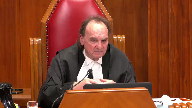
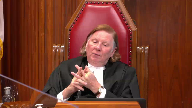

Estate of Bernard Sherman and the Trustees of the Estate, et al. v. Kevin Donovan, et al.
This transcript was made with automated artificial intelligence models and its accuracy has not been verified. Review the original webcast here.
Justice Martin (00:00:05): De courte
, la courte!
Justice Wagner (00:00:35): Good morning.
In the case of the state of Bernard Sherman and the trustees of the estate et al.
Against Kevin Donovan et al.
For the appellant, the state of Bernard Sherman and the trustees of the estate et al.
Chantal Shea and Timothy Youdan.
For the intervener, Attorney General of Ontario, Peter Scrotten.
For the intervener, Income Security Advocacy Center, Eva Krajewska.
For the intervener, British Columbia Civil Liberties Association, Adam Goldenberg.
For the intervener, HIV and AIDS Legal Clinic, Ontario et al., Khalid Janmohamed.
For the respondent, Kevin Donovan et
al., Iris Fisher and Skye Sepp.
For Adidam Canadian Media Lawyers Association et al., Robert S. Anderson QC.
For the intervener, Attorney General of British Columbia, Jacqueline Hughes.
For the intervener, Canadian Civil Liberties Association, Ryder Gilliland. Mr. Shea?
Speaker 1 (00:02:27): Thank you.
Chief Justice, justices, I will be dealing with our principal submissions this morning relating to the necessity branch of the test for discretionary orders limiting public access.
I also intend to briefly address the framework and the legal principles to be applied when undertaking the proportionality analysis.
I intend to reserve 15 minutes for my colleague, Mr. Yudin, to address issues arising in the context of the proportionality analysis, and in particular the weight to be afforded to the open court principle in the context of applications for probate.
The burden will be on me to ensure that appropriate time is allocated.
Barry and Honey Sherman were found brutally murdered in their Toronto home in December of 2017.
The crimes against them remain unsolved and unexplained.
The central issue to be resolved on this appeal is whether the privacy and safety interests of the beneficiaries and trustees of the Sherman’s estates outweigh the public’s interest in accessing materials relating to the private testamentary affairs of the Shermans.
I’ll have three principal submissions.
First, that the privacy of these affected individuals is an important interest sufficient to satisfy the first stage of the Sierra Club test.
Second, that the application judge correctly concluded that there’s a risk to the safety of the affected individuals.
And third, that the application judge properly took into account the nature of these proceedings when assessing the value to be afforded to court openness.
I intend to address issues arising from the respondent’s fresh evidence motion throughout the course of my submissions.
Turning to my first issue, the Court of Appeal erred in holding that the privacy and dignity of those left in the wake of violent crime are purely personal concerns that cannot, without more, justify a ceiling order.
Further, the Court of Appeal erred in holding that such concerns only have relevance if the proportionality stage of the analysis is reached.
This so-called privacy plus model adopted by the Court of Appeal is inconsistent with decades of case law and our society’s understanding of privacy rights.
It also results in an improper hierarchy of rights that places freedom of expression over interests in privacy, absent the presence of the elusive and ill-defined something more.
Justice Rowe (00:05:09): Now, freedom of expression, of course, is protected under the Charter, doesn’t that count?
Speaker 1 (00:05:17): Yes Justice Roe, it does count.
We submit that privacy is also protected under the charter and as I will elaborate in particular reasonable expectations of privacy are protected by section 8 and section 7.
We assert that such expectations of privacy should be sufficient to satisfy the necessity stage.
Justice Rowe (00:05:36): Is the jurisprudence on 7 and 8 relevant to the publication of something because a newspaper isn’t an organ of the state?

7 and 8 are there to protect citizens from oppressive behavior on the part of the state, not from commentary and from reporting.
Speaker 1 (00:05:56): I agree with that, Justice Roe, but as this court held in Jarvis, while the jurisprudence surrounding Section 8, for example, deals with intrusions of privacy by the state, it can also be contemplated that there will be intrusions on an individual’s privacy from other individuals, including members of the media.
We don’t submit that there is any breach of the charter in the present case.
To the contrary, we submit that the test adopted by this court must take into account charter values.
And when assessing whether or not there is an expectation of privacy that is sufficient to satisfy the relevant test, we submit that it’s appropriate for this court to look at its prior jurisprudence where it has looked to the concept of reasonable expectations of privacy.
Overlapping speakers (00:06:39): What is the source of these character values?
Speaker 1 (00:06:42): The source of these charter values is long standing.

This court has stated repeatedly that the jurisprudence is replete with references to the long standing social value of privacy.
The fact that it underlies the dignity and integrity of individuals and that is why provisions of the charter including section 7 and section 8 have been interpreted to show that there is an interest in privacy in certain circumstances.
In our factum we say that privacy should be protected in appropriate circumstances.
Justice Brown (00:07:15): Is the content of a charter value of privacy the same thing as the charter right of privacy?
Speaker 1 (00:07:24): Values are those things which we view to be important in Canadian society.
A right is something, obviously, that’s strictly enforceable.
Justice Brown (00:07:33): Well, there’s things in the Charter that aren’t in the Charter that we think are also important in Canadian society.
We have a whole law of property built around an interest that isn’t protected in the Charter.
Can protection of property rights be of value, even if it’s not a Charter value?
Overlapping speakers (00:07:49): Yes, I submit that it can, but privacy is a charter right.
I think that that is indisputable.
I’m just not understanding where this values business gets you.
In terms of privacy being a charter value.
Justice Brown (00:08:00): Well, in terms of advancing your case here about privacy, I mean, it’s almost a rhetorical sort of bauble that you’re hanging on an argument that otherwise may have substance to it.
Speaker 1 (00:08:13): Well, if we take a step back and we look at what this court said in Dagenais, when the test was formulated in Dagenais, the court expressly said that the court must adopt the common law to be consistent with charter values.

So whether we assign it the nomenclature of a value or a right, I would assess privacy as being both, but certainly whenever we’re looking at the test to be applied in this case, we must ensure that those values and rights are being taken into account and they’re being weighted properly.
The problem with the court of appeals decision in this case is you don’t get to a consideration of privacy until the second stage.
So in circumstances where an individual has a reasonable expectation of privacy over the information in question, pursuant to the decision of the court of appeal, you don’t pass a bill.
You don’t collect $200.
And we submit that that is inconsistent with the jurisprudence of this court.
It must be open to courts to consider privacy and privacy interests that attain a certain level.
And we appreciate and, you know, one of the things that’s helpful about this process is seeing the submissions of our friends, seeing the submissions of the interveners.
And in those submissions, we see floodgates arguments and they say, well, what are we going to do here?
Any assertion of privacy is going to become sufficient to satisfy the test.
That can’t be right.
And we would agree, not every assertion of privacy is going to rise to the level to get you over the necessity hurdle.
We submit that in circumstances where there is a reasonable expectation of privacy in the totality of the circumstances, that expectation would be protected as a right under the charter and accordingly should also be protected.
Justice Rowe (00:09:53): The expectation of privacy in the totality of the circumstances is an empty box into which you can throw anything.
Speaker 1 (00:10:00): Well, with respect, Justice Roe, we know that that phrase is used in a number of cases.
And I would submit that it’s not a box into which we can throw anything.
It is contextual.
And the analysis necessarily takes into account the circumstances of the case.
And if I’m understanding correctly, I think one of the hurdles might be how can one have an expectation of privacy over information that’s ordinarily included in a court record?
And as we say, you know, again, we look at Jarvis.
The facts are different.
But there in the courts below, there was an assessment of how can this information be private in circumstances where it’s readily observable in the public.
But there, the court looked at the context.
And here, if we look at what happened in Bragg Communications, the Nova Scotia Court of Appeal said, well, AB has engaged the court system.
And because she has done that, she loses any expectation of privacy that she had over the information in question.
History tells us that that cannot be the case because we know that this court granted the ceiling order.
And I would submit that this court is likely not in the business of granting ceiling orders over unreasonable expectations in privacy.
And from that, I would derive the fact that AB’s expectation was reasonable.
And our friends in their factum rely on one case, a single case for the assertion that there can be no reasonable expectation of privacy in court records.
It’s the case of Kuja and Times Newspapers.
It’s a recent case from the UK Supreme Court.
Justice Martin (00:11:33): But just before we leave Bragg, don’t we look at Bragg as being a case where the court has effectively said that the ceiling order in that case is necessary to further the interests of justice and at the same time protect the young complainant from the risks of suicide and so on and harassment and public shame sort of thing?
I mean, there is a bigger picture there, a very great public interest, such that we’re saying that the ceiling order actually furthers the administration of justice and is not antithetical to it.
And so could you help me out on that, please?
And relate it to this case, if you can.
Speaker 1 (00:12:29): So I think this case, there are a number of analogies to the case in Bragg because as you’ll have seen from our written submissions, we don’t assert privacy in the air.

We actually do assert what the Court of Appeal would call a something more, which is a risk to safety, a reasonable apprehension of harm.
And we say, I think McIntyre established this.
Justice Martin (00:12:49): Excuse me to interrupt, I apologize, but your time is limited, so I just want to be, I don’t think anybody is doubting that if there is a real risk of harm, that would win the day here probably, certainly on the necessity point.

But you’ve got, you know, the issue there is, is it speculative and is there enough there?
Speaker 1 (00:13:09): I think, again, there is the question of whether or not there is, as a matter of fact, a risk of harm, but taking a step back, there is also the question as to whether or not there is a reasonable apprehension of harm on the part of the affected individuals.

These individuals have been left in the wake of a violent crime.
MacIntyre has said that the protection of the innocent is of critical importance in our society, and the difficulty with some of the submissions put forward by the respondents or the interveners is it suggests a sort of categorical approach.
So because there is no recognized category of protection of privacy of innocent persons who are living victims of crime, we fail the test.
Justice Brown (00:13:52): category either, right, innocent victims of crime.

This is an important point for me.
For me, this is actually probably the most crucial point in this case is to understand what evidence is necessary to satisfy a reasonable apprehension of harm and whether it’s made out here.
And it surely cannot be just, oh, I’m a victim of or a relative of a victim of violent crime who might be a beneficiary, who might be a trustee.
It surely has to be more than that, otherwise we’re going to have ceiling orders on, you know, the estates of every person who’s a victim of murder.
And I would agree.
So what do you got?
And that’s the point.
Speaker 1 (00:14:37): Okay.
Let me try this out.
And I would agree with you with respect to that.
So in this case, the starting point with respect to the assessment of harm is a, b, brag.
And we know that that court, the court has said there that absent scientific or empirical evidence, the court can find harm by applying reason and logic.
And we say that that is precisely what the application judge did here by reviewing the record as a whole and taking into account the nature of the assertions of risk at the point in time in which the order was granted.
We have to remember that.
This order was granted six months after the murder of Barry and honey Sherman.
It’s easy for us three years after the fact to look at the assessment of risk through the lens of hindsight.
But if we place ourselves in the seat of the application judge six months after the murder, we have to look at the known facts and the unknown ones.
And again, the evidentiary burden has to be assessed contextually.
Requiring scientific or empirical evidence of the likelihood that somebody will suffer violent crime or kidnapping, for instance, in this case, is asking for the impossible.
Justice Rowe (00:15:44): there here beside the assertion of risk and the speculation that is attendant upon it.
I see nothing.
Speaker 1 (00:15:54): And so in that regard, I would encourage this court, and I’ll take you to the application judge’s reasoning, because I think he set it out perfectly, but in assessing the risk of harm, in particular when we’re looking at risks of physical harm, I think the Court of Appeal erred by looking solely at the probability that the harm would come to fruition and not the magnitude of the harm.

Both the probability of the harm and the magnitude have to be assessed together and they have to be weighted.
Here, the Court of Appeal dismissed out of hand the risk of physical harm or the risk of kidnapping because there was no scientific or empirical evidence, no affidavit about the motive, no affidavit about the status of the police investigation.
Justice Martin (00:16:35): I thought you might have gone down a different road and tried to show us that the harm here is of a hugely huge psychological magnitude and of course this court has said in the past in the context of criminal law that psychological harm can amount to bodily harm but you’ve not gone that way.

Speaker 1 (00:16:58): We have, but the difficulty is there’s no, when we look at the Court of Appeals decision in MEH, for example, we know that Justice Dougherty in that case required evidence from doctors, from psychiatrists, empirical evidence that actually spoke to the psychological harm that the individual in that case would suffer.
And we know in that case it didn’t meet the hurdle because it amounted to mere embarrassment.
Here we must look at who these individuals are.
They are individuals who have been left in the wake of a violent crime.
I would say that the risk of psychological harm can be inferred based on reason and logic.
And I take you to the application judge’s reasoning.
It’s at paragraph 24.
Justice Martin (00:17:38): was that argued and more importantly was there any evidence did you call any psychiatric or psychological evidence to support this or are you saying it’s so obvious we don’t need it?
Speaker 1 (00:17:49): We did not call any psychiatric evidence, and as part of the sealed record, there is the affidavit of AB.
In the affidavit of AB, he actually does speak to the need to take into account the emotional well-being of the affected individuals.
Justice Karakatsanis (00:18:03): Can I ask you this?

In looking at necessity, I think it’s also important to take into account reasonable alternatives, which would include publication ban, but it would also include redactions.
And I know the application judge looked at this kind of at the end, but my question to you has to do with redaction and whether or not redaction of something like name, like addresses and phone numbers would meet some of the concerns that you’re raising.
Overlapping speakers (00:18:41): and
Justice Karakatsanis (00:18:41): I know you’d also like to have the names of the beneficiaries.
I think that’s also another area, but even then, why isn’t redaction sufficient to meet the test?
Speaker 1 (00:18:52): So redaction may be sufficient to protect some of the privacy interests at issue and perhaps some of the physical safety issues, but the difficulty is when we look at the concept of privacy, obviously there are multiple levels and it’s a bit nebulous.
There is privacy as secrecy, there is privacy as control over information and there is privacy as anonymity.
And in this case, we really call upon the latter two definitions of privacy, that being control over the dissemination of information.
So that would certainly be protected, for example, by the redaction of certain information and it would preclude it from being disseminated, but when we look at privacy as anonymity, redactions become difficult.
And in that regard, this is in the sealed and confidential version of our factum, so I won’t articulate the points to you, but I’ll give you the reference at paragraphs 100 and 101, the reasons provided there, when we look at privacy as anonymity, that is where the challenge is created, because redactions will indirectly lead to disclosure of the information that we seek to protect.
And another point that I raise here…
Justice Karakatsanis (00:20:04): you’re really looking for an all or nothing, that the privacy interest that you’re seeking to protect can only be protected, that redaction of say addresses and phone numbers would not meet the harm that you are submitting.
Speaker 1 (00:20:22): Well, with respect to, again, it’s the interest of privacy as the control over information.
So when we look at the aggregated information, so in individuals, not just their name, but also their home address, also what we would characterize as financial information, the nature of a bequest, you’ve got birth dates, you have aggregated information together.
So when we look at privacy over control over dissemination, we would say that redactions would not be sufficient to necessarily meet the standard.
However, we also have to look, and I’ve directed this court, to the point in time.
So we’ve got the point in time at which the order was granted, and we’re assessing was the application judge correct at that point in time in granting a full ceiling in order to protect against the dissemination of the information, but also to preserve the anonymity.
If we look forward, you’ll note in our written submissions that we’ve asked for an extension of the ceiling order as well.
If we look forward with respect to the extension of the ceiling order, it may very well be that redactions could be appropriate if, for example, this court found that the affected individuals no longer had a reasonable expectation over the privacy of certain of the information in the record.
Justice Kasirer (00:21:32): What about a publication ban?
That would deal with the dissemination problem.
It would certainly impinge upon freedom of the press, but less so than the sealing order.
Why wouldn’t that be a reasonable alternative here?
Speaker 1 (00:21:49): So a publication ban could assist with respect to the privacy interests, but we assert it’s not sufficient in respect to the risks of physical safety.
Any members of the public would still be able to access the court files and it only takes one person to publish that information online and the harm is done.
So if we accept that there’s a risk to physical safety, a publication ban is not sufficient.
Justice Kasirer (00:22:10): So, what if you don’t accept the risk argument?

In other words, in the necessity test, you make your point on privacy, but you fail to make your point on risk, the speculative problem that you’ve faced already in questions.
Would, in that circumstance, a publication ban be a reasonable alternative?
Speaker 1 (00:22:31): To the extent that the publication ban precluded not just the media, but any other member of the public from disseminating this information, it could, but the difficulty here is with respect to privacy, again, as I said, we’re looking at an aggregated collection of information that when taken together, its disclosure will cause harm to these individuals.

And even if we don’t say physical harm, harm to their privacy interests, harm to their informational privacy interests.
The information begins to approach what this court articulated in cases like Plant and Spencer as the biographical core of information.
So if what we’re looking to protect is the privacy of these individuals, we would submit that a publication ban might not be sufficient to the extent that the biographical core of information is still available for any member of the public to access on the court record.
Overlapping speakers (00:23:21): But that’s going to be the case in any estate file.
Speaker 1 (00:23:23): And it may very well be the case, but again, we’re not submitting that recognizing privacy at the first stage of the test gets you a ceiling order, results in a blanket restriction to freedom of expression.

It just gets you over the first hurdle.
Then we get into the balancing exercise, which my colleague Mr. Yudin will discuss, but it might be that in an ordinary estate file, it’s not the case that there is a need to protect privacy that outweighs the interest in public access.
Justice Rowe (00:23:54): You’ve just flipped the open court principle.
You’ve just said that where someone asserts a privacy interest, you short-circuit straight into a balancing act.
And to me, saying that we depart from the open court principle is an extraordinary step, not an ordinary way of doing business.
Speaker 1 (00:24:13): Well, and to that, I would say a few things.

Number one, as I’ve asserted, it should be a reasonable expectation of privacy.
There has to be a risk to that privacy.
You must show that there are no reasonable alternatives.
And then to your point, Justice Roe, we acknowledge freely that the open court principle is a cornerstone of Canadian democracy.
There is no doubt about it.
But as this court’s decisions in Dagenais and others have held, that principle must be balanced against countervailing principles.
In a number of cases, including, for example, Edmonton Journal, this court has held that privacy and freedom of expression are equally important rights.
So while I accept the importance of court openness, I think the suggestion that we are turning it on its head is not necessarily correct, because as you’ve said, it is of significant importance.
And if we were dealing with a litigious matter, if we were dealing with an estate file where there was not the same risk of publicity, not the same risk of physical harm, then it would likely be the case that the test would not be met and the information would become publicly available in the ordinary course.
Justice Brown (00:25:21): So you were going to walk us through what the applications judge had said about physical risk.
Speaker 1 (00:25:27): Yes, and this is found at paragraph 24 of the application.
Overlapping speakers (00:25:34): I’m right there.
Speaker 1 (00:25:34): So to quote from the application judge, while it would have been preferable to include objective evidence of the gravity of the risk, the lack of such evidence is not fatal.
The necessary inferences can be drawn from the known facts and the unknown ones.
The willingness of the perpetrator of the crimes to resort to extreme violence to pursue whatever motive existed has been amply demonstrated.
The risk of harm is foreseeable and the foreseeable harm is grave.
I have no difficulty in concluding that the current uncertainty gives rise to a reasonable apprehension of risk on behalf of those known to have an interest in receiving or administering the assets of the deceased.
Justice Brown (00:26:15): So it’s the willingness, I’m trying to separate the characterizations in that passage from the actual hard facts that he’s relying on.
And it appears to be that he is looking exclusively to the willingness of the perpetrators of the crime to resort to extreme violence.
And I think reading it generously, the unknown motive is also weighing heavily on the judge’s mind.
So we’ve got an unsolved murder, basically, in admittedly quite extreme circumstances.
This isn’t your garden variety homicide.
I accept that.
So is that it?
And is that all you need?
Speaker 1 (00:27:09): No, and again, you’re exactly right.

The starting point for this analysis is itself extraordinary when we look at what happened with the murder of the Shermans.
And again, the known facts and the unknown ones are important when we look at the point in time in which the application judge made his decision.
It was six months after the murders.
There is no information and there remains no information in the public with regard to the motive, with regard to the identity of the perpetrators, anything to this effect.
So requiring the application judge to have some form of empirical or scientific evidence apart from the graphic nature of this murder and the fact that individuals who will seek to administer or inherit from the estate, we don’t know what the motive is and in those circumstances, it’s reasonable to infer that there could be risks of harm to these other individuals.
Again, it’s not scientific but here the risk has to be assessed contextually.
And as I noted, I think that the principles of both the probability and the magnitude of the harm have to be taken into account here.
When we look at the likelihood of it happening, it might be low.
But the likelihood of the Shermans being murdered was also low.
But the magnitude, the gravity, the graveness of the potential consequence is something that should be taken into account by the court.
And again, it’s not fanciful to think that this is something that could happen.
Justice Brown (00:28:37): Well, it’s not fanciful, the threshold, and I ask that not rhetorically because I notice the application judge also uses that elsewhere in his reasons.
Speaker 1 (00:28:46): Well, if we look to Mentuck, in that case when the court looked to what comprises the necessity branch, what is required to be shown, in Mentuck they said it’s a serious danger sought to be avoided, not a benefit to the administration of justice.
And I would say that there is no doubt that there is a serious danger sought to be avoided in the present case.
The question is how do we assess the seriousness of that danger?
And that is why I urge this court to look at both the gravity of the harm as well as the probability.
Justice Martin (00:29:18): I could put it back to you that it’s not fanciful to think that whoever murdered the Shermans are part of an organization that is very sophisticated, very criminal-minded, mafia-type operation.
So it’s fanciful to think that they wouldn’t know who the beneficiaries are, who the children are, who the grandchildren are, and everything else about this family, and so that what are we protecting?
I mean, and I’m not being facetious.
This was a very, very sophisticated crime, in my view, committed by a very sophisticated organization.
At least it has those hallmarks.
Speaker 1 (00:30:08): and with respect justice boldaver you said that that’s in your view and those assertions are merely speculative that it could be the case that the murderer has all this information but it could be the case that they don’t and are we so confident
Overlapping speakers (00:30:24): Is it-
Speaker 1 (00:30:24): be so confident that they are so sophisticated that they would have this information that we’re willing to unseal the court files.
Overlapping speakers (00:30:31): That is the question.
Speaker 1 (00:30:35): Well, I guess the question is, am I so confident it is not the test?
The test is, is there a serious risk?
And as I’ve said, is there a serious risk of significant magnitude with some probability of occurring?
And again, that is sufficient to get over only the first stage of the test.
The balancing exercise must also be taken into account.
Justice Kasirer (00:30:59): I’m going to come back to the publication ban.

I’m sorry to belabor it, but I want to really understand your point.
Did I understand you to say that without the risk of harm, assuming that that point, you lose that point and that we’re dealing with the dissemination point, why wouldn’t a publication ban be a reasonable alternative and then we affect on the second leg of Sierra the weighing analysis in respect of that confidentiality order rather than the very exigent sealing order?
Speaker 1 (00:31:38): In that circumstance, as I noted previously, the difficulty is that any member of the public and any number of members of the public could access the court file and gain information about the full names, the home addresses, the birth dates, financial information, status and respect of the estate, and that in and of itself will result in a breach of privacy to these individuals in the circumstance.

Justice Kasirer (00:32:01): But there would be no dissemination of that possible, assuming the publication ban was respected.
Did you ask for a publication ban before the application judge?
Speaker 1 (00:32:12): We did not.
We raised the possibility of redactions.
The application judge agreed with our submission, however, that full sealing was appropriate.
Justice Kasirer (00:32:19): shouldn’t you have turned your mind to a publication ban as a reasonable alternative?

It’s one of the alternatives that’s out there.
And given the sealing order is such an affront to the open court principle, surely that one, that point, and that the, the problem that you were facing, the primary problem that you were facing was the publication of the information in a, in a newspaper.
I, I, I’m surprised that the publication ban wasn’t thought of.
And perhaps we should think of it here. Okay.
Speaker 1 (00:32:49): It was considered justice, but again, because the application judge agreed with our submissions with respect to the risk to physical safety, a publication ban was not sufficient.
If this court disagrees with respect to the risk to physical safety, it is of course open to this court to provide that a publication ban preventing the dissemination of this information would be a reasonable alternative in this case.
But that’s not what you’re saying.
Justice Brown (00:33:14): saying here you’re not saying your answer to why not a publication ban wasn’t well we’re still concerned about physical safety because the assassin could come and get that information your answer was privacy so is that still your answer
Speaker 1 (00:33:31): Well, it is my answer, and in my respectful submission, it is not a reasonable alternative to order a publication ban when individuals can still go and access this information.

But that does not mean that privacy can’t satisfy at least the component of being an important interest.
It may, however, be that this court finds that a publication ban is sufficient to protect both privacy and the risks to physical safety.
Justice Martin (00:33:58): May I bring you back to your point about sort of reasonable expectation of privacy.
When we look at our general law, we do an assessment of that on a normative basis.
And the question I would ask you is what do we do with the nature of this kind of information which at one level we can understand the privacy of ordering your affairs, but it’s required by law to be put on a court record before one can get access to the necessary legal steps.
And I’m just wondering where that fits in with a reasonable expectation of privacy because it seems to me that it cuts a whole bunch of different ways because you must give this information on a court file to get a desired step in a proceeding.
Speaker 1 (00:34:55): Yes and Justice Martin I agree with you that it’s certainly a consideration in terms of the starting point for the assessment
and I would remind this court as was stated in Cole that a reasonable though diminished expectation of privacy may still be a reasonable expectation and here I do think that the nature of the court files should be borne in mind at least to some extent these are purely administrative court files this is a non-contentious application for probate and while it might be that this information is required to be filed that doesn’t mean the individuals can’t have a reasonable expectation of privacy in the aggregated information that could be characterized as forming part of the biological core of information but again simply because they hold that reasonable expectation of privacy doesn’t mean that a ceiling order will necessarily be granted for the reason that you still have to satisfy the second stage of the test and it might be in circumstances where there isn’t a violent double homicide in circumstances of the type here that court openness outweighs those privacy interests notwithstanding the fact that they are reasonable.
Justice Martin (00:36:03): Sir, what do you make of the motion judge’s statement of paragraph 28, there’s no requirement to seek probate of a will in Ontario?
I’m just commenting on something that my colleague just said to you that they really didn’t have a choice and so on.
What does that mean?
I don’t quite understand it.
Speaker 1 (00:36:21): And I’ll allow my colleague Mr. Eudin to address this in more detail, but generally what it means is that there is no mandatory legal framework that requires probate to be sought in Ontario.

It may be for practical reasons that it is necessary to obtain it to transfer certain assets, but there is no requirement and individuals often will arrange their affairs in such a way that there is never probate sought.
And there is no overarching public policy that requires individuals, for example, to obtain probate in respect of all assets that pass on death.
Justice Rowe (00:36:57): When I was in practice, which was a long time ago, unless the estate was very modest indeed, I always probated it well.
I thought it was simply good practice.
Speaker 1 (00:37:07): and that may very well be the case, Justice Roe, and I’ll allow you to debate the wisdom of that practice with my colleague Mr. Yudin.
So one of the issues that I would like to address briefly is some of the fresh evidence that’s been tendered by my friends on this appeal that goes to the assessment of a reasonable expectation of privacy.
And in particular, I’d like to address the land transfer documents.
It’s our position that those documents should not be admitted by this court for a few reasons, which are set out in our response to the fresh evidence factum, and it includes the fact that they were discovered in advance of the hearing before the court of appeal.
Mr. Donovan was aware of the process of a fresh evidence motion, which is referred to in the decision in which we obtained a stay from Justice Van Rensburg, and he still didn’t seek to adduce those documents.
But more importantly, to the reasonable expectation of privacy point, we’d submit that the information in those documents was practically obscure, which is an important point to take into account when we’re assessing the privacy interest in question.
We know that Mr. Donovan was investigating the murders of the Shermans for fully 14 months before he learned that this property was connected to the Shermans, and then he ran a targeted land title search, and then he obtained the information.
So the suggestion by my friends, and I see from their same-day compendium that they’ve included these documents and they no doubt intend to take you to those documents in support of their argument, we say that the fact that those documents were filed with the land transfer registry cannot speak to the reasonable expectation of privacy of these individuals, including because if we accept that proposition, it would essentially mean that anybody who’s been involved in the chain of title for a piece of property in the land title system loses any expectation of privacy over their personal information, and we submit that that would be an absurd result that cannot be supported.
And again, I’ll just briefly address another of the pieces of fresh evidence that sought to be adduced by my friends, which is various articles that make reference to the Sherman children.
We say that those articles are not relevant and that they wouldn’t have affected the result below.
First, we say that they’re not relevant because none of the articles actually identifies any of these individuals as being a beneficiary.
They actually don’t disclose the home addresses, any financial information, any birth dates in respect of these individuals, and I know from my friend’s submissions they refer repeatedly to these individuals as the presumed beneficiaries for the very reason that they don’t know.
Further, the application judge actually considered this issue at the hearing of the application.
Mr. Donovan has included in the record his notes which he claims to have read verbatim during the hearing.
I was there.
I’ll say that he kept pretty close to the notes, and he made that argument at the hearing of the appeal or, pardon me, the application, and the application judge said that while there has been publicity in respect of these individuals, there has not been publicity with respect to all of the details that would be included in the estate file.
So turning again before I move forward, and I think I’ve addressed most of the issues relating to the risk of harm, I will address the fresh evidence on that point, but before I leave the privacy issue, I would like to emphasize the fact that it is our position that it should not be necessary to establish some additional harm flowing from a breach of privacy, the something more, in order to satisfy the first stage of the test.
And in the Alberta and United food workers case, this court stated that harm flows from the permanent storage or unlimited dissemination of personal information through the internet without a person’s consent.
And we have to look at the context within which this decision is being made today.
When we submitted our factum back in January, Zoom court wasn’t a thing that existed.
Online filing in the Canadian court systems was a bit of a glimmer in folks’ eyes, but it wasn’t something that existed.
Now we have seen an enormous paradigm shift in the way that people will engage with our courts, and there are unlimited ways for potential intrusions on individuals’ privacy.
And we don’t say that the concept of Zoom court or online filing applies to the facts in our case.
But I do say that it is important context that this court should take into account when deciding what the appropriate framework is.
And in that regard, before I leave the necessity branch, I would like to take you to our proposed test.
So why are we here?
What do we say this court should do?
And the respondents and certain of the interveners say that the approach that the appellants advocate for is an unwarranted departure from the law.
And what we hope to establish today is that we’re not suggesting an inappropriate departure from the current state of the law, but instead an incremental adaptation of the law in the same way that this court adapted the test in Dagenais, in Mentor, and in Sierra Club.
To take into account…
Justice Rowe (00:42:41): I put it to you, what you’re doing, what you’re putting forward is quite profound, that what was set out in Sierra Club, that there has to be a public interest component in it beyond the private interest, you’re simply making it poof, disappear, and we go, as soon as somebody says, ah, I have a personal private interest, because personal private interests are important, let’s go to the balancing test.
The first, the requirement for a public interest component simply would no longer exist.
Speaker 1 (00:43:15): And to that Justice Roe, I would say two things.
So first, and I alluded to these quotes at the beginning of my submissions, but I think they’re important when we look to the public interest in privacy.
CBC in New Brunswick, the court said that the social interest in protecting privacy is longstanding.
In Edmonton Journal, the court said that our society has cherished and given protection to privacy.
And in O’Connor, the court said it is an essential component of what it means to be free.
We assert that there is, in fact, a public interest in protecting the privacy of individuals.
And in our factum, we point to the existence and enactment of privacy-driven legislation.
And I wish to clarify, we don’t assert that that legislation applies in the present case, but we say it evidences the approach that’s been taken by governments across this country to recognizing that privacy interests are important interests to the public and that there is a need to balance them against countervailing interests of access.
That’s why we have the Privacy Act and the Access to Information Act that work together for this very reason.
And again, to your suggestion that, poof, privacy results in protection, again, I urge this court to look to a reasonable expectation.
It’s not any expectation of privacy in the air.
I don’t say, I don’t want my name on that document in court.
I want to keep it private.
And all of a sudden, the test is met.
But if you have an aggregated collection of personal information, including, as in the present case, in circumstances where there’s a violent unsolved double homicide, we would submit that there is a reasonable expectation that that information will be protected.
And the cases also say that there are situations abound where individuals can disclose their information and should be comfortable that it will be used for the purpose for which it has been disclosed, as opposed to disseminated more broadly.
So for those reasons, we say that there is, in fact, a public interest in protecting the types of privacy interests that we point to here.
So I would like to briefly address in the few minutes I have before I turn the floor over to Mr. Yudin just the framework to be adopted at the second stage of the test, proportionality.
So I’ll tee things up for him and allow him to undertake the contextual analysis.
Justice Martin (00:45:37): to do that, would you explain the Zoom example to me?

I’m slow, I don’t understand this.
If you’re suggesting that somehow it has become an important feature of the court process and if people are concerned that somehow their privacy interests will be open to be discovered by anybody who can crack Zoom or something and they won’t use it and that’ll affect the administration or justice, where are you going with this?
I don’t understand it.
Speaker 1 (00:46:01): So, Justice Moldaver, where I go with it is this.
Before the advent of Zoom Court, you would have a hearing in court.
And it might be that the information didn’t rise to the level of the Sierra Club test.
But there wasn’t the same risk of dissemination and invasion of privacy in circumstances where one or two people filtered into the back of the courtroom.
We’ve seen recently, and this is not in the record, so I hope it is a matter that the court can take judicial notice of, but there have been hearings in the lower courts, in the divisional court, where thousands of people have been participating online and attending.
So if we start to consider that reality in cases involving sensitive personal information, what we say is the opportunities for dissemination, the opportunity for invasion of privacy in a way that never existed before are now coming into play.
And this court should at least have the tools to deal with privacy interests that are legitimately raised in circumstances where there is the potential for broad dissemination of information.
So with respect to the proportionality analysis, the respondents and certain interveners claim that varying degrees of public interest being recognized in certain types of cases would lead down a slippery slope, which would be untenable and unconstitutional.
This position is based, and I say with respect, on a mischaracterization of our position.
So I’d like to tell you what we are not arguing on this appeal and what Mr. Youden will not be arguing.
We don’t argue that the open court principle does not apply to probate proceedings.
We don’t argue that probate is not a court proceeding.
We’re not advocating for the removal of all personally identifiable information in all probate applications, nor in all court files.
And finally, we don’t only submit that criminal trials or civil litigation are deserving of openness.
As opposed to any of these things, our position is that the weight to be afforded to the values engaged in a given case must be assessed contextually in light of the nature of the proceedings.
And this is supported by any number of statements from the jurisprudence.
In Sierra Club, the court stated that environmental matters, by their very nature, will engage the public interest.
In Edmonton Journal, the court contrasted matrimonial proceedings, which were at issue there, with litigation involving government agencies.
And the court there said that the latter would have a far more significant interest for the public.
What we say here is that noncontentious applications for probate, if we look at it as a spectrum, with a criminal trial being at one end, a noncontentious application for probate is somewhere towards the other end.
And unless there are any further questions, those are my submissions, and I’ll turn the floor to Mr. Uddin.
Speaker 2 (00:49:56): Chief Justice, Justices, as Ms. Shea said, I’m going to deal with the balancing part of this, which is only, I appreciate, relevant if we get over the first hurdle of there being a necessary risk.
And I’m focusing on the nature of the proceedings as being a relevant consideration, and the proceedings in question being non-contentious probate applications.
It is our submission that there is no significant public interest in the arrangements that individuals use for the passing of their property on death, whether they do that by a will or whether they do that by other means, which I shall refer to briefly, and whether if they do it by a will, whether the will is admitted to probate or not.
The context for that submission is that much property passes on death as a practical matter otherwise than by a will.
I don’t have statistics as to the amounts.
I only have personal experience and knowledge of the techniques that are available.
But the fact is that a very high proportion of property passes other ways.
And we list them in the factum, but inter vivos trusts.
We even have the federal government passing income tax legislation that facilitates the use of trusts for property passing on death and avoiding probate.
Secondly, we have joint tenancy and other joint accounts arrangements where property passes by right of survivorship.
Justice Rowe (00:51:39): All of these mechanisms are available.
They’re usually used by persons of some means.
Ordinary folks don’t often use them.
Speaker 2 (00:51:46): With respect, Justice Roe, moving on, that may be correct with inter vivus trusts.
It is not, with respect, correct with joint accounts or joint tenancy.
Many people, if they have property, many people have it in the form of joint accounts or joint tenancy.
If they have any interest that pass on death, my next item, which many people have, is life insurance.
Life insurance can pass by a designation, which by legislation is not required to be by a will, but is by a simple form.
Many people, ordinary people, have savings arrangements such as tax-free savings accounts, pension arrangements such as RSPs, RIFs, registered pension plans, all of which can pass on death and typically do by designations provided for by legislation that are not by will and are simple forms.
Justice Kasirer (00:52:50): Your premise, Mr. Eudin, that there is non-probate transfer of property is plain and obvious. Yes, yes.
That doesn’t change the public character of probate proceedings.
Speaker 2 (00:53:03): No, I accept that.

This is a question of balancing the importance to the public and in having access to the circumstances where, for one reason or another, a property does pass by a will.
And a point I’m going to come on to, that will is, in fact, probated.
Because the next point, if I may, is that even when a will is used, there is, as we’ve already stated, no legal requirement in Ontario or in many jurisdictions for a will to be probated.
It’s simply a practical question whether or not probate is needed.
Sometimes a bank or financial institution may require it in order to get the protection that they do get from probate.
To deal with land in the land title system in Ontario, except for certain exceptional cases, it is necessary to get probate.
So it’s not a legal requirement, but sometimes it’s a necessary practical thing to have done.
The next point, which I think is still relevant to your question, is since the decision of Justice Greer in the Gronowski case, which was in 1998, it’s become a common practice in Ontario and some other jurisdictions of Canada as well, to use what people refer to as dual wills.
So there will be one will which deals with the assets for which it is expected probate will be needed, such as significant amounts in bank accounts, and another will to deal with the interests in property that it is expected probate as a practical matter will not be needed for.
And the most common example, not one that most ordinary folk have, is interest in private corporations.
So dual wills have become a normal part of the legal landscape.
And in that case, it’s only the one will that’s admitted to probate.
The other is not.
This technique has been fully accepted, was acknowledged in the Gronowski case that it worked from the point of view of avoiding what at that time was a probate fee, became the estate administration tax.
And there’s been various judicial comments that this is an appropriate mechanism for people to use if it’s available to them.
So my answer is there is a public interest, I accept, when the probate process is used in that process.
But it’s of a minimal kind when one bears in mind the context that it’s actually relatively common, putting it the other way, that the probate process is not engaged.
And also, that access to knowledge about what is in the probate file of a particular individual is providing an extremely partial picture into the passing of the property of that person.
If there is any probate file at all, in many cases there won’t be.
It will be possible to deal with the will and the estate without any probate, with no public involvement, no public right of access.
Justice Kasirer (00:56:34): But the fact that a probate will speak to the existence of a will and of potential beneficiaries serves a notice function to the possibility of another will being out there or other potential beneficiaries being out there.
And if the public character of the proceedings are stunted, those functions too are stunted.
Speaker 2 (00:56:57): Well, I think part of the answer to that is that that function wouldn’t be carried out if there wasn’t probate of the will at all, and often there isn’t, and there appears to be no public interest in requiring, for the purposes of that policy, that there be probate of every will.

Secondly, the circumstances where there is sealing, as in this case, does in fact provide notice, as Kevin Donovan found when he went to the estate office in this case, of the fact that applications had been made in each estate of Barry Sherman and Honey Sherman, and that there was a protective order in respect of that.
He was able to take that knowledge and in fact then begin these proceedings that have led to this court.
So the ability to, for somebody who has a will and thinks that their will may be a later will or there’s some issue about a will is really in no different position because of this or similar sealing orders than they otherwise would be.
Justice Kasirer (00:58:06): You wouldn’t learn much with the sealing order in place about what was in the file.
If there was, I’ll go back to my question I asked of your colleague, if there was a publication ban as opposed to a sealing order, then some of these functions of probate would be attended to and the privacy interest could be protected, nonetheless, at least the dissemination point which your colleague seems so preoccupied with.
Speaker 2 (00:58:33): Yeah, I accept that a publication order would meet much of the concern, but not all of it.

And I also maintain that the policy of people being able to question the will is clearly not a significant public policy because it isn’t carried out and is in the cases of a dual will as far as the non-probated will, wills that are not probated, and all these other mechanisms that the legislature in fact provides for, that provide for completely private passing of property on death.
Take life insurance.
You make a designation.
There could be a later one.
Designations don’t have to be filed with the insurance company.
It protects them if they act on the faith of one filed with them, but there could be a valid one later than the one they have on file.
The person could be in a position to take a position on that, but there’s no public policy that that gives them access to the private financial information relating to all these other methods of property passing on death or relating to unprobated wills.
Justice Martin (00:59:42): But let’s go back to the reasonable expectation of privacy point that I raised earlier.
Doesn’t your explanation that this is something, probate is something that may or may not occur and lies in a choice of a practical effect, doesn’t that suggest that the individuals in choosing to do that have chosen to put their information into a court document which is subject to the open courts principle and how reasonable an expectation of privacy may exist in such a circumstance?
Speaker 2 (01:00:19): Thank you.
That’s an interesting question for me, I say with respect.
So there’s two people that I think are being referred to there.
The testator, who is the person who has created the arrangement and put the names of the beneficiaries, the names of the trustees, and may have an expectation that it’s possible that probate may be needed.
May also have an expectation that it may be possible to avoid probate, but doesn’t know.
Now, that testator doesn’t know, of course, of the circumstances that may occur in the future that affect his death, or her death, and that may make the balancing of the importance of of the probate materials, if probate was necessary, being available, and and the harmful effects of it being done.
So that’s something that has to be outside of his knowledge.
All he knows, or she knows, is that it may be necessary to get probate of this.
If probate is needed, yes.
In the normal course, the expectation is it will be in a public file.
But there is, of course, I mean, the whole background to this is we do have a discretionary power in the Courts of Justice Act to seal court files.
So there’s also an expectation, if the necessary tests are satisfied, that it may be possible, if the circumstances are appropriate, for the file to be sealed.
So that seems to be a reasonable expectation on that person’s part.
On the part of the persons after the death who were involved, the individuals who we have expressed concern about are the the trustees and the beneficiaries.
They don’t, in a sense, have a choice in the matter.
Well, the trustees have a choice to whether or not to apply for probate, but if it is as a practical matter necessary to apply for probate to deal with assets of the estate, because, for example, there may be a very substantial amount in bank accounts that otherwise can’t be dealt with, they have no real choice.
And so, it’s not, they therefore may have had a reasonable expectation that they would have privacy if the circumstances justify it, but having no real choice, they have to do what they can.
My next point was to deal with the point that is that the application judge put considerable emphasis on, which is that that the probate process was fundamentally administratively, administratively, sorry, fundamentally administrative in nature in most cases, and he obviously intimated that in this case that that was applicable.
And that is correct.
In the normal probate process, the matter is dealt with, as we explain in the factum, by the court office, the estate in Ontario, the estate court office, and there is only on, in special circumstances, occasion to involve a judge.
And it is, of course, in the non-contentious probate, extremely rare, there would be, extremely rare, there’d be any court hearing.
And this distinct, there is a distinction in the probate process, traditionally between non-contentious probate that was called solemn form and non-contentious that was called common form.
That’s carried over into the Rules of Civil Procedure in Ontario, with Rule 74 dealing with non-contentious probate and Rule 75 dealing with contentious probate.
Justice Wagner (01:04:08): I will ask you to conclude.
Your time is up. Okay.
Thank you.
Mr. Scruton.
Speaker 3 (01:05:02): Thank you.
Ontario is intervening in this appeal to submit that your decision should account for an important area in criminal law in which privacy interests will on occasion intersect with the open courts principle and I’m speaking about the search warrant context and in that specific context we’re talking about very potentially sensitive information that has been gathered by the state, summarized in an affidavit and filed as part of a court process, an investigative court process and which will involve potentially very, very sensitive information like information about the prior sexual abuse or prior sexual history of a witness or a victim.
I won’t take you to it but perhaps the best example in a large scale investigation is in the warrants at issue in the Bruce MacArthur investigation which referred to very personal information, not about a victim or a witness but about people who simply were associated with people in that category and that Justice Mokas decision from the Ontario Court of Justice is at tab 3 of my condensed book.
In many cases the warrant will never be the subject of litigation and the people whose information is contained in the warrant application will never know that their information is there and presumptively publicly accessible.
And Ontario submits that if personal privacy about very sensitive information is recognized as sufficient to engage the first step of the Dagenais-Mentech test, absolutely nothing is lost in terms of open courts or the presumption for openness and transparency.
Justice Rowe (01:06:53): the public interest, just big red flashing lights there, it’s the proper police work and the pursuit of crime and everything else, there’s a public interest component in that that’s absolutely fundamental.
Speaker 3 (01:07:06): I couldn’t agree more.
Scrutiny of the court’s processes, scrutiny of the efficacy of police investigations is something that you can gain from accessing search warrants.
But in my submission because of the potentially sensitive information for ordinary people that is contained in there, there has to be some room to consider that context.
It’s not uncommon now for search warrants to contain a section called information known but not relied upon because police are so concerned about being full and fair and frank that they include information that’s not necessarily relevant to the legal test for issuance of a search warrant.
And there has to in my submission be some room for a judge to look at the content of this information, who it relates to, what sort of privacy interest it engages in the context of the overall court process.
And warrants, respectfully, are where the rubber is going to meet the road in terms of private information that is filed in a court and presumptively publicly accessible.
And what I’m submitting is simply that if you recognize that some material is so sensitive and so personal that it potentially engages the first step of the Dagenais-Mentech test, it then just enables a judge to perform a contextual case-specific balancing and a wide range of remedies are available.
Unlike in the Sierra Club kind of commercial context where what is at issue is a confidentiality or a ceiling order, under the Dagenais-Mentech test, the very first step precludes actions, precludes publication bans unless you establish a serious risk to an important public interest or to the administration of justice.
And in my submission, the real problem is in how Dagenais-Mentech has been interpreted by the Court of Appeal in the MEH and Williams case and in this case because it can’t be in the interest of justice for people who are simply mentioned in search warrants and materials like that to have to go out and hire counsel, hire medical experts and psychiatrists and psychologists simply to have a judge consider material that will on its face be very clearly relevant to someone’s dignity or security.
And that’s all the submission is, is that if you recognize some sensitive information as engaging privacy values, it enables a judge to do a contextual balancing.
Maybe redactions will suffice.
Maybe a publication ban just over somebody’s identity will suffice.
It will be rare and probably never that a ceiling order will be necessary to protect privacy.
A ceiling order may be necessary to protect other legal interests like the efficacy and integrity of investigation.
Justice Martin (01:10:03): context of a police investigation, I don’t know whether this has ever arisen, but it’s in the context of a police investigation and we don’t want to make, we don’t want to create a situation that is antithetical to the furtherance of the administration of justice by having people who are being interviewed about by the police in the context of an investigation and disclosing the police want them to disclose their most private information and then go around and say, ha, we got you, you know, all your private information, we’ll go public.
Why don’t we wait till we get a case like that?
Speaker 3 (01:10:39): In my submission we have cases like that.
There are cases like that.
When you look at the Bruce McArthur investigation, I realize I’m out of time, the decision of Justice Mokas, she, if she did not consider privacy to sufficiently engage step one of the Dagenais-Mentuck test, wouldn’t have been able to undertake the balancing that she didn’t and said I’m going to redact the names of these affected parties before I let the press have access.
Justice Wagner (01:11:13): By Zoom now, we’ll have Eva Krajewska.
Speaker 4 (01:11:20): Good morning, Justices.
Overlapping speakers (01:11:22): Good morning.
Speaker 4 (01:11:23): Just checking that you can hear me, thank you.

The Income Security Advocacy Center intervenes to represent the interests of low income and vulnerable individuals.
They have an important perspective to offer as this court considers the legal test for confidentiality orders.
Sierra Club was decided in the context of significant commercial agreement where the court was concerned with the chilling effect on corporations in commercial litigation.
This chilling effect is no less important in the context of vulnerable and low income litigants.
When I refer to vulnerable litigants, I am talking about children, victims of sexual assault, a fraud and non-consensual distribution of intimate images.
When I speak of low income people, I am referring to those litigants who cannot afford a lawyer and who are subjected to a legal process such as debt collection or evictions, or who need to resort to a legal process to access their basic necessities such as income support or disability benefits.
When engaging the court system, these persons must often disclose private information including work history, income, relationship status, family structure, household composition, medical records, including mental health records.
It is from this perspective that ISAC makes two submissions that the principles of public importance that are relevant here are the prevention of harm and access to justice.
With respect to the first point of the Sierra Club test, we submit that protecting the privacy interests of vulnerable individuals prevents harm and promotes access to justice.
Those are the issues of public importance.
With respect to the second step of the Sierra Club test, we submit that the open court principle and the prevention of harm are not necessarily binary.
The open court principle is about maintaining the confidence in the courts.
I’ll start with the first part of the Sierra Club test, which is that confidentiality orders may be necessary to protect the interests of vulnerable persons and low income people.
We do not suggest that privacy interest here is in and of itself a public interest.
Rather, we submit that the court should protect privacy interests where this would prevent harm to vulnerable persons.
In our submission, this has been recognized in courts, in brag and MEH, in courts dealing with children, in family matters or criminal proceedings.
From those cases, we can distill a number of factors where the court has decided that the prevention of harm to these individuals justifies a public interest in the public interest and the necessity standard under the Sierra Club test.
And that prevention of harm may arise because of the person, their circumstances, the nature of the proceedings, or the nature of the information that is necessary to adjudicate those proceedings.
And the specifics of that are found at paragraph 19 of our factum.
With respect to the second stage of the Sierra Club test, it is our submission that a confidentiality order should not always be seen as taking away from the open court principle.
That in the same way that in Sierra Club, there could be a chilling effect on litigants from providing information necessary to the court to adjudicate a matter, the same principle applies to vulnerable or low-income individuals who must access the courts in order to obtain necessary relief.
And in this respect, Justice Doherty noted in MEH that the public interest in access to the courts for legal relief is particularly important where that access is required to give legal effective decisions that affect a person’s autonomy, whether that be in divorce proceedings, in income support, or where there is a victim of cyber bullying.
And in this respect, ISAC proposes that the following factors be considered at the balancing stage of the Sierra Club test.
First, the importance of the information to the public.
How important is it that the public have access to this information to understand the case and to understand that justice has been done?
The second factor is the necessity of the information to the court to adjudicate the matter, so as not to disincentivize parties from providing this information.
And the third is the nature of the proceeding, whether the proceeding has wider implications for the justice system, or whether it is an intermediary matter.
And lastly, if this court is going to, I see that I’m out of time.
I was just going to suggest that if the court is going to look at tweaking anything, then perhaps where the legislative framework, like the Social Administrative Tribunal, especially expressly authorizes confidentiality orders, that this be considered as part of the test under the Sierra Club.
Thank you.
Justice Wagner (01:16:52): Thank you very much.
Speaker 5 (01:16:59): Thank you Chief Justice and good morning justices.

My name is Adam Goldenberg.
I represent the BC Civil Liberties Association.
Before I get into my submissions, I want to recognize my co-counsel Catherine Gullison who would be with us in the courtroom if that were in the public health, in the public health cards, but she is instead joining us through the webcast from Vancouver.
The BCCLA intervenes to take a broader position than you just heard from my friend Ms. Krajewska.
In our submission, there is a public interest in the protection of personal privacy and that public interest is sufficient to meet the requirements of the necessity step of the Dagenais, Mentuck, Sierra Club test.
Obviously by making that submission, we invite the response that we propose to open the floodgates, that there will be a paradigm shift as Justice Rowe you asked a number of times to my friends earlier today in favor of covertness and away from openness, displacing the presumption that this court has recognized consistently over the decades.
We disagree with that and I’m going to give you two reasons why.
The first is that there is still the requirement that in order even to get past the first step of the test, in order to get to balancing, there needs to be a demonstrated lack of reasonably alternative measures.
That has been consistent in the test since Dagenais and if that is the case, then we get to the points that Justice Khazira was making to my friend Michelle earlier today, that if what we are really seeking to protect is the identity of the individual, the private information that is sought to be protected is the connection between a particular individual and a particular proceeding, it’s highly unlikely that a sealing order is going to meet that requirement.
An atomization order or a publication ban is overwhelmingly likely to meet that threshold while a sealing order would not.
That stems the floodgates at the first step of the test.
My second submission is that if that’s not enough for the court, you have three options and we say our third option, to preview where I’m going, is the one that you should select.
The first option is to say that there is no public interest in protecting personal privacy and I’m not going to repeat what Ms. Shea said earlier today, but we say not only is that inconsistent with this court’s pronouncements in a number of different areas of the law with respect to the importance of personal privacy and with respect to what the court has said about the constitutional dimension of the protection of personal privacy under sections seven and eight of the charter and just momentarily Justice Roe, it’s not the newspaper that is interfering with that charter protected interest, it’s the court which requires the disclosure of information that would otherwise be private in public, that’s the state action to which the charter right to privacy that exists under section seven and eight attaches.
But if you say that there’s no public interest in protecting personal privacy, you will in fact be going further than you have ever gone before with respect to confidentiality orders and the open courts principle.
This court has never said, the Ontario Court of Appeal has said, Justice Doherty has said in two cases in the last 10 years, but this court has never said that personal privacy alone is not enough, that there is no public interest in protecting personal private information.
So that first option we say would require you to depart from your own precedent.
The second option would be to say that the applicant needs to show that there is some other public interest beyond the public interest in protecting personal privacy that would be engaged in the order that’s being sought.
The requirement of some other public interest, more than one public interest when one of the public interest that’s asserted as the public interest in protecting personal privacy, would change the test.
No longer would the applicant need to show a public interest that is threatened by the openness of the proceeding.
They need to show two.
And that would, again, depart from settled law.
The third option- I just-
I just-
Justice Rowe (01:20:52): Let me just put it to you very directly, Mr. Goldenberg.
You have obliterated the distinction between public and private interests in your submission.
Speaker 5 (01:21:01): Well, I don’t say that I disagree with that, Justice Roe.

I think you have, the court has, in recognizing repeatedly that there is a public interest in the protection of private information.
Yes, there is a private dimension to that interest, of course.
But in today’s society, to hold that there is no such thing as a public interest in the protection of private information would, I say, be a dramatic departure from the decisions of this court in a number of different areas of the law and would have significant ramifications.
But to your other point earlier, Justice Roe, about whether this obliterates the open court principle and flips the presumption on its head, we say that by insisting on a robust, which is a word that lawyers and judges love to use, but here it actually does mean something, a robust approach to the second step of the test, to insist and to say what you said in Sierra Club, that it’s not merely a matter of balancing, but rather of investigating whether the salutary effects of the limitation on public access outweigh the deleterious effects on the open court principle and the values that underlie it, ensures that the presumption remains that court proceedings will be open.
It’s unlikely, as Mr. Scruton told you, that merely a interest in protecting private information will have sufficiently grave salutary effects to outweigh the detrimental effect on openness by removing public access on the basis of that interest.
Thank you very much.
Justice Wagner (01:22:22): Rather, a robust approach can ensure that openness remains the rule in COVID-19.
Mr. Skarakatsanis has one last question for you.
Justice Karakatsanis (01:22:30): Yes.

Is another option to look at what work serious risk can do, if we accept your first option and say that there is a public interest in protection of privacy, does that ‑‑ would that mean on the first step that we’d actually have to go further and say not only is privacy engaged, but given the nature of the privacy that’s engaged, there’s a serious risk to that public interest?
Is that another option?
You’ve listed a few for us.
Speaker 5 (01:23:02): We could make that one of the options on the list.
The reason I didn’t include it, Justice Kerikatsanis, it goes back to what Ms. Shea told you earlier, which is that in order to establish that there is a serious risk to the public interest in protecting private information, one need only look to the openness that is becoming far more a reality in court proceedings because of the internet and the instantaneous dissemination of information, including online proceedings and including online filing, where previously the court could say, well, there’s no serious risk to the disclosure of this private information because the media would have to come and attend the courtroom.
They would have to go to the court office to get access to the physical court file.
We don’t live in that world anymore, and we won’t live in that world at all very soon as court files become accessible through the internet and through online portals and so forth, all of which are very positive developments, but which come with significant potential detrimental ramifications for personal privacy.
So we say that that serious risk is there whenever the court compels the disclosure of information that an individual would otherwise control its dissemination, and that we say should be enough to satisfy those requirements of the first step of the test.
There’s still the requirement of minimal impairment, and there’s still the robust balancing that ensures that openness remains.
Thank you very much.
Thank you, Chief Justice.
Inaudible.
Speaker 6 (01:24:32): Chief Justices, Justices, the Health Coalition of Interveners is before this court today because the clients and communities we serve, people living with HIV and or mental health conditions, continue to face rampant stigma in relation to their medical conditions.

They therefore have a profound and deeply important interest in protecting their privacy when they appear before courts and tribunals and their medical conditions will form part of the record.
The failure to protect these privacy interests creates significant risks of harm to our clients in the form of potential discrimination, harassment and even violence and could also deny them access to justice, quite similar to what Justice Moldaver described about the Brad case in putting his question to Appellant’s Council.
The heart of our submission is this, our clients have been almost entirely successful when bringing motions for confidentiality orders and we say their privacy interests are exactly the kind that ought to be protected.
We are here therefore to urge the court to ensure that its articulation of the Sierra Club test or the next evolution of the test does not raise the threshold for achieving the protection of our clients’ privacy interests nor exclude them at the necessity stage.
With that context in mind, I have two brief submissions to make on the development of the necessity stage.
First, the court has before it a number of approaches to assessing privacy interests at that stage.
Regardless of the approach the court adopts, the privacy interests our clients hold in their stigmatized medical information would satisfy the necessity stage and the articulation of the test ought to reflect this.
If the approach to the necessity stage requires a privacy interest with something more, a public interest component, there is a recognized public interest in protecting medical information which is heightened for people living with stigmatized conditions.
This court has held that intimate details about a person at their biographical core are worthy of protection, that’s testling and plants.
In line with this reasoning, two provincial courts of appeal applying the Sierra Club test have held that there is an important public interest in protecting privacy related to medical information that satisfies the necessity stage and you have those citations at footnote 16 of our factum.
If the approach is that a reasonable expectation of privacy should guide what privacy interests amount to an important interest at the necessity stage, then in addition to details of the biographical core of a person grounding a reasonable expectation of privacy, the significant risk of harm our clients face absent privacy protection would also ground a reasonable expectation of privacy and that’s in line with this court’s reasoning in testling at paragraph 54.
Our second submission on the necessity stage is that the application of the Sierra Club test to personal privacy interests ought to be properly tailored to that context which requires risks to administration of justice and more particularly access to justice to be considered at the necessity stage.
The Sierra Club test as you’ve heard was developed in the context of a commercial matter in which risks to access to justice didn’t arise and weren’t considered.
Outside the commercial context, if a sensitive personal privacy interest is not afforded protection, there is a real risk that individuals like our clients will not pursue or defend proceedings that they will not have access to justice as was considered in Bragg.
The important public interest in preventing such a denial of access to justice requires that the administration of justice be situated at the necessity stage for individual privacy interests as the Ontario Court of Appeal recognized in MEH in paragraph 27.
To conclude, this kind of evolutionary approach to the Sierra Club test is consistent with this court’s reasoning in MENTEC at paragraphs 28 to 32 where the court reconfigured the Dagenais test and situated the administration of justice at the necessity stage to account for the purpose and effects of the order sought in that matter and the goal was that the administration of justice in that case and future cases would be properly considered in the test.
We say it’s entirely appropriate to take that same evolutionary approach in relation to personal privacy interests and we also submit that a careful reading of the Bragg decision would reveal that that was implicit in the reasoning of the court, that access to justice was at the necessity stage and we say it’s vital to take that kind of evolutionary approach for the profound privacy interests that our clients hold.
Thank you.
Justice Wagner (01:29:22): Thank you very much.

The court will take its morning break, 15 minutes, so we’ll be back at 11.20.
Thank you.
Iris Fischer.
Speaker 7 (01:31:02): Thank you.

Chief Justice, justices, good morning.
I’m counsel to the respondents, Kevin Donovan and Toronto Star newspapers.
I’ll be referring to my condensed book and perhaps to my factum.
I don’t plan to take you there but I might give you some references from the fresh evidence materials.
This case began with Kevin Donovan, the chief investigative reporter for the Toronto Star, going to the Superior Court in Toronto and making a routine request.
He asked to see some court files.
Mr. Donovan was investigating police conduct and two murders that had shocked Toronto and the country, those of Barry and Honey Sherman, well-known Toronto philanthropists, active in the community, and in Barry’s case, the founder and majority owner of generic pharmaceutical giant Apotex.
In asking for the court files related to the Sherman’s estates, Mr. Donovan was engaged in a staple of news gathering, accessing Canada’s open courts.
Mr. Donovan and the Star, members of the press, were exercising their public interest role as a vehicle through which information about the courts is transmitted to the public.
The principle of openness, charter protected but based in centuries of common law, is foundational to our democracy and critical to the public’s confidence in the administration of justice.
It is this commonplace yet fundamentally important access to court files that this court should preserve in this case because if it were up to the appellants, access to courts would look very different.
In terms of my submissions, I will briefly set out what is at stake in this case and then subject to your questions, I will briefly address the Star’s fresh evidence motion and then speak to the fundamental concepts of openness and free expression and particularly in the context of probate proceedings.
I will then address this court’s Dagenais-Mentuck Sierra Club test, the privacy arguments raised by the appellants and the correct application of the test to those arguments and finally, I will address their security arguments although as we have seen, they may be related and are brought together by the appellants.
So first, the stakes.
The central issue of course is whether the Court of Appeals decision unsealing the Sherman Estate core files should be upheld.
In arguing against that, however, the Sherman Estates have raised fundamental challenges to the Dagenais-Mentuck test to which you now must turn your minds.
The focus of my submissions will therefore be twofold.
First, that the test has not only stood the test of time but remains today the correct and constitutional approach to considering restrictions on court openness including privacy interests that you should affirm afresh and second, that the application of the test to these facts mandates unsealing as the Court of Appeal found.
On the first issue, the appellants invite you to revisit the framework for considering encroachments on the open court principle.
I’ll make no bones about it.
They ask you to weaken it.
To change the court’s 26-year-old test, flexible, contextual, using many hundreds if not thousands of different motions and contexts so that it no longer presumes the openness of all court proceedings.
As you know, the test has two distinct parts.
First, the order must be necessary to prevent a serious risk to an important public interest.
A serious risk to an important public interest.
And the risk part is important including because reasonably alternative measures won’t prevent that risk.
And this is a high standard.
Chief Justice Lemaire underlined necessary in his decision in Dagenais.
The court also said in Dagenais remote and speculative dangers are not enough.
And the courts have said a restriction should not be ordered to give a party a leg up or because it is safer to do so.
The last one was Justice Nordheimer in a case that’s at tab 22 of my book of authorities involving the fair trial rights of two criminal accused.
So and I just want to point out here that my friend misinterprets the necessity branch as requiring only a public interest.
It requires a serious risk of harm to a public interest.
And that harm aspect relates to a lot of the arguments and questions and I’ll come back to that point.
It’s only if the first branch is met that a court goes to the second step where the salutary effects of the order must outweigh the order’s deleterious effects.
You’ll note that the test reflects the substance of the Oakes test.
And this is to ensure that the exercise of judicial discretion to order restrictions on openness is subject to no lower a standard of compliance with the charter than legislative enactment.
This is what the court said in Mentech at paragraph 27.
So in order to breach section 2B, you have to justify it.
And that’s why the presumption and the evidentiary thresholds are important.
Dagenais was groundbreaking because the court reconfigured the framework for protecting openness so that fair trial would no longer automatically trump section 2B, which was what happened before that.
So in this case, you are asked to, by the appellants and some of the interveners, do a few things.
Carve out categories of court proceedings, what the appellants describe as non-litigious or administrative court proceedings.
A bit of an oxymoron.
Despite repeated affirmations by this court that the test applies to all discretionary court orders that limit free expression and to all kinds of proceedings.
Justice Rowe (01:37:00): I think that’s the position of the appellants.
The interveners, I think, didn’t put on that qualification.
Speaker 7 (01:37:08): No, you’re absolutely right, Justice Roe.
That one is limited to the appellants.
But the second one comes up with some of the interveners, which is to recognize that a subjective desire for personal privacy without a particularized risk to a public interest is sufficient to limit court openness.
And we hear that from the BCCLA and from other interveners, I believe, as well.
And despite the fact that this court has recognized that a public interest is necessary to trump openness again and again and again, you’re asked to effectively lower the evidentiary threshold for restrictions on court openness.
And specifically, although this wasn’t really pursued an argument to expand the concept of objectively discernible harm so significantly the speculation in untestable affidavit form is sufficient.
Despite this court repeatedly ruling that generalized assertions of harm and speculation are insufficient to restrict openness.
And Justice Brown, I know that was one of your questions, which I can come back to.
Overlapping speakers (01:38:13): I hope you will at some point.
Yes, I will, I will, although I’m happy to address a question.
No, I don’t want to get you off the road, as long as you allow for time.
Speaker 7 (01:38:24): Yes, and I want to say this point, although it didn’t come up in argument, but it’s a theme throughout my friend’s written submissions and also through Justice Dunphy’s decision.

You are asked to scrutinize the propriety or legitimacy of the interest shown in these court records by one of the country’s leading newspapers and reporters, despite this court recognizing the fundamental importance of the presumption of court openness, which doesn’t require a party seeking access to prove they have a sufficient or acceptable interest or any particular interest at all.
Justice Rowe (01:39:07): It seems to me that scurrilous reporters have the same constitutional rights as high-minded ones.
Speaker 7 (01:39:15): Yes, I mean, not relevant on the facts of this case, but the right is the public’s.

And I want to clarify one thing before I move on.
There’s no question that the Dagenais-Mantuck test can and does and has, time and again, dealt with privacy interests when they can be expressed as particularized public interests.
And the MacArthur case is a perfect example of that that my friend, Mr. Scruton, raised.
I take no issue with that case.
That case involved the application of the Dagenais-Mantuck test very carefully to consider privacy interests when there was a public component and when there was a particularized risk of harm.
So I just want to, I think we need to be clear, I think that we’re all talking about the same thing.
So there’s no question that a privacy interest with a public interest component can and has met the test.
Justice Brown (01:40:19): So just to be clear, you said initially where there’s a public component and where there’s a particularized risk of harm, do you concede that a particularized risk of harm can be the public component?
Speaker 7 (01:40:34): Justice Brown, I don’t.

And I think those are two important components.
So you look at the interest that’s put forward, and it has to be a public interest.
So whether that’s protecting vulnerable groups because they have medical conditions and may be stigmatized, whether that’s protecting victims of cyber bullying, whatever the case there is, you look at is there that public interest.
And then you have to look at whether there is evidence for objectively discernible harm, and those things aren’t necessarily mutually exclusive, of a risk of harm.
So not every, for example, not every theoretical risk to a privacy interest that I didn’t ask.
Justice Brown (01:41:17): you if every particularized risk of harm qualifies as a public interest, but can a particularized risk of harm qualify as a public interest.
Speaker 7 (01:41:25): you could have a particularized risk of harm to a purely private interest.
So as the court said in Sierra,
Overlapping speakers (01:41:32): Is there not a public interest in protecting people from harm?
Speaker 7 (01:41:35): That, that with respect would be too broad.

If that was, if that was sufficient, there wouldn’t be a need to identify a specific public interest or a specific harm.
And the presumption of openness would be too easily gotten over.
Justice Brown (01:41:59): That’s a total logical answer.
I’m asking can one form the basis of the other and you’re saying that would undermine the separateness of the two.
I’m suggesting that if you have a particularized risk of harm, that might qualify as a public, as raising a public interest.
The answer to that cannot be well, that separates, we have to keep the public interest and the particularized risk separate.
Overlapping speakers (01:42:28): I mean, I may not have fully understood your question.
I mean, let’s say-
Justice Brown (01:42:31): for example, and I know these aren’t the facts of this case, but let’s say there is a there’s the killers of the Shermans left behind a note saying the rest of the family are going to get it.

So we have direct evidence that of a
and I think we’ll call that a particularized risk of harm.
Is there not a public interest served by protecting the identities of those people then?
I agree with that.
So that’s all I need.
Speaker 7 (01:43:02): I would have characterized that as a risk of physical harm.
Justice Brown (01:43:09): physical harm, mental harm, I mean we said in Sadat, you treat them both the same way.
Speaker 7 (01:43:14): Right, and I agree with that, and that actually was the example I wanted to give you later in terms of what kind of evidence is typically put forward to ground a risk of harm in the sense it’s being put forward.
I’ve seen affidavit evidence attaching evidence of a threat that individuals have received or simply setting out a basis for explaining a threat that has been received.
I’ve seen evidence that came from police.
Those are the kinds of things.
There has to be some substance to it, some reason to believe that there is a real security risk, and that’s not the case here.
I understand, of course, I haven’t seen the AB affidavit.
My client never saw it and wasn’t permitted to cross-examine on it, but I understand from the court of appeals decision that there’s one paragraph that simply contained a conclusory statement, a conclusory assertion, rather than even a statement of fact.
Overlapping speakers (01:44:16): So are we in the abstract level now still or are we now moving into one?
Speaker 7 (01:44:20): We’re now speaking specifically about this case.
That would be clearly, that’s clearly insufficient based on all of the jurisprudence of this court from Dagenais to Mentac to Sierra Club to Toronto Star, the 2005 decision.
Justice Martin (01:44:35): Can you give us some guidance on how you would define how a court goes about assessing whether something is in a public interest or a private interest?

It seems that there’s clear continuum there and what indicia do people or would future courts look for if you’re seeking to maintain this distinction.
Speaker 7 (01:45:01): Justice Martin, I will say that I have not found courts to have struggled with determining whether there’s a public interest.
It tends to be whether the interest can be expressed in a way that goes beyond the particular parties of the case.
So, for example, there was a decision called Badakhshan, that’s in my materials, where a woman had been murdered.
Her family went to the court and said, could you please seal the facts of this case, how this woman died, because her grandmother doesn’t know about this, and we don’t want to tell her.
And so on that basis, could you do that?
And the court said, no, we can’t do that because that’s a very specific personal interest, and we can’t see that as sufficient to encroach on openness, as opposed to, for example, in Sierra Club, where the court looked not just at whether a commercial party wanted to keep its information confidential, but rather stepped back and said, here, a confidentiality order is needed so that the party can actually put forward evidence and put forward a defence in litigation.
And it’s important for all parties, not just for the party in Sierra Club, that they should have that ability.
Brag is another very good example.
Justice Martin (01:46:35): But in those kinds of cases there’s often legislation involved or we heard from the health coalition there’s other pieces of legislation that might give some content to what is in the public interest.
I’m just asking how do we or do you say the public interest has to be something other than privacy all the time?
It has to be related to another interest that can be argued or characterized or elevated to a public interest which makes it a little bit indeterminate.
Speaker 7 (01:47:13): The issue with privacy is that it is indeterminate as a concept, as this court has said so many times.

It’s not a unified concept.
There’s so many different levels.
And so that’s why with privacy in particular, courts have looked to see what is it that we’re really getting at?
Is it an interest in protecting vulnerable children because they’re the focus of proceedings where they don’t have any control?
I mean, that’s one example.
And you’re right, the court does often look to see what the legislative framework is.
In cases involving children.
Overlapping speakers (01:47:53): The court will do that, and sexual assault victims.
Speaker 7 (01:47:56): all of those, those are good examples.

I mean, protection, in Mentuck it was protection of the identity of undercover police officers.
So we can see that as important for the administration of justice to be able to have undercover police officers doing their job, and that’s exactly the way that the court looked at it in Mentuck.
In MacArthur, what Justice Mocha did there was she looked at it from the lens of the administration of justice as a broad principle.
So what the crown had argued in that case was that all the personal information of all the people who spoke to police, sorry, all the information about all the people who spoke to police whose evidence was described in the ITOs should be sealed along with their names.
Nothing should be available to the public on the basis of privacy.
And Justice Mocha accepted that that was a clear breach of openness and didn’t satisfy the test.
What she did was look at the specific information and considered each one in terms of whether viewed more broadly, it would impact the administration of justice.
So one example was she redacted the names of individuals where their very intimate sexual information was in the ITOs.
Not the information itself, just their names and just where it was something so intimate that society has an interest in protecting it, which I think is another way of looking at a public interest.
Is it something that, stepping back, society has an interest in protecting?
The way this court did in Bragg with victims of cyberbullying.
Justice Karakatsanis (01:49:38): So would you approach disclosure of any minors in this case differently?
Speaker 7 (01:49:46): With minors, the approach is the same in the sense that the test is the same.

This isn’t a case where there is a statutory provision, of course, and there are lots of court proceedings where children are involved and are named.
I have an example in my factum at footnote 192.
We still need to look at with minors whether there is a clear risk that has been framed as a particularized public interest.
The standard for minors may be different.
This is part of the contextual nature of the test.
Courts have recognized again and again that minors are more vulnerable, more subject to stigmatization in certain contexts, more subject to all kinds of potential harms.
So I would simply urge the court to look at the information.
We don’t just redact all minors’ names and court records.
Overlapping speakers (01:50:50): with respect to redaction of the miner’s name.
Speaker 7 (01:50:53): Well, I’m at a bit of a disadvantage because I haven’t seen the records.

So I don’t know what’s in there with respect to minors.
I would say that if minors are simply noted as beneficiaries, that that would not be sufficient.
As I believe someone pointed out, maybe Justice Moldaver, there is a lot of information already in the public domain, and people who want to know who the Sherman’s children and grandchildren are already know. In fact,
Overlapping speakers (01:51:26): So you’re getting into the new evidence now, the fresh evidence?
Speaker 7 (01:51:30): Well, I’m making the more general point that these are well-known people and that it’s possible to find out who they are without the need for the new evidence, although perhaps I should go there because I think it is helpful to frame some of the discussion certainly on what’s already public.

Overlapping speakers (01:51:56): You might want to speak to its admissibility first.
Speaker 7 (01:52:00): Okay. Okay.
Well, let me go there.
So, I’ll briefly tell you perhaps quickly what it is, although I’m sure you know.
So, in terms of the one where there may be an admissibility question is excerpts from a transcript of an in-court cross-examination of Toronto police detective Constable Dennis Yim, which happened in the Ontario Court of Justice in the context of an application to unseal search warrants executed in the murder investigation, and that’s in my condensed book at tab six.
Detective Constable Yim was the crown’s witness in opposing the unsealing of search warrants, so he had an interest in maintaining sealing, which I think goes to the reliability component of admissibility.
He was also the only member of the Toronto police to be working on the Sherman murder investigation exclusively full-time, and this is in his affidavit, which is in my fresh evidence motion record, tab two, exhibit C.
He also says that the information from the estate files is embedded within the ITOs, so there is a connection to the police investigation, which is certainly an element of the public interest in this case.
That is not in my condensed book, that excerpt, but it is in my motion record, again, tab 2D, page 61.
Detective Constable Yim also definitively states a number of other things.
He’s not worried that the information contained in the estate files might be unsealed, and that unsealing would have any bearing on the police investigation.
He’s not worried about that.
He’s unaware of any safety issues that relate to the ongoing sealing of those documents.
He’s unaware of any people concerned with their safety, and the Toronto police did not provide any information to support the theory that the individual named in the estate court files would be harmed if the information was released.
This cross-examination took place on October 15, 2019.
So this was after the appellants filed their leave application to this court.
In terms of reliability and necessity, stepping back, I would first say that I acknowledge that this is a transcript from a different proceeding, but it is sworn evidence, so I would certainly say that it is reliable.
It’s evidence from a party that has the information and that actually has an adverse interest to my client in the general concept of unsealing.
But he doesn’t have the same interest as the Shermans.
I mean, who was cross-examining him here?
It was actually Mr. Donovan who was cross-examining him here.
It was a searing cross-examination.
Justice Brown (01:54:48): He doesn’t actually say that there’s no risk, he simply says he’s not aware of any risk.
Speaker 7 (01:54:55): I agree with that, but as the full-time police detective working on this case, it’s reasonable that if there was a risk, he would know about it.
It’s also important to look at it in the context of things like this.
Justice Brown (01:55:09): saying it would be reasonable to say if there was a motive he would know about it.
Nobody knows anything about this case.
Overlapping speakers (01:55:15): that we know of.
Nobody knows.
Justice Brown (01:55:17): the motive.
Nobody knows the assassin’s name.
Speaker 7 (01:55:19): I don’t want to give evidence, so I won’t, but there were other things he said in the context of this cross-examination that suggest differently.

But I also think we need to position it in the context of the onus on this application, which is my friend’s.
It’s not Mr. Donovan’s onus, it’s not the Toronto Star’s onus.
And so here I would say we don’t, you know, we already have only speculative assertions for the security risk, but this definitively deals with it.
Justice Brown (01:55:50): It doesn’t, it doesn’t definitively deal with it, it doesn’t say there’s no risk.
He says he’s unaware of risk.
And presumably the Shermans know that because otherwise they would have a police statement saying that there is risk.
So how is this relevant?
And it certainly doesn’t definitively deal with it, that’s misleading.
Speaker 7 (01:56:08): Well, I certainly don’t mean to be misleading, Justice Brown.

When I use the word definitively, I say in the context of the issue here, which is, is there evidence of a serious risk of harm to a security interest?
I think it does deal with that, because if the only police detective working on this full time says, I don’t know about it, and I’ve never known for people to be concerned for their safety, and as a police, I’m also not worried about this information being unsealed, that’s very strong evidence that there isn’t a risk, which isn’t even the onus in the situation.
So not only do my friends not meet their onus on the speculative evidence they did put forward, but this evidence directly contradicts it.
And I agree with you.
No, it doesn’t.
It doesn’t.
Justice Brown (01:56:56): contradict it.
It simply doesn’t supplement it.
It’s an empty vessel.
There’s nothing there the Shermans can draw from.
But just because the police officer is unaware of a risk doesn’t contradict the assertion of the Shermans, and we need to talk about that as to whether that’s sufficient, that there is a risk.
Speaker 7 (01:57:15): But wouldn’t the Toronto Police be aware if there was a risk?
I would say they would be.
They’re running the investigation.
It would be a reasonable person would report a risk to the Toronto Police.
I think that’s a good point.
Overlapping speakers (01:57:30): they might.
There’s a lot of things in this case the Toronto Police doesn’t know and that might be one of them.
Speaker 7 (01:57:36): Well, if there is some risk that was never reported to the police and that the Shermans have not put forward evidence of, they don’t get a ceiling order.
That’s just not good enough.
That just doesn’t meet the test for restricting openness.
We have what we have here.
Justice Brown (01:57:54): I mean, what does it give you that you don’t already have?
The Shermans don’t point to the police saying there’s a risk.
And all you’re adding is what we can infer from that, which is the police are unaware of a risk.
How’s that relevant?
Speaker 7 (01:58:10): I would say it’s because the fact that they’re unaware of a risk means that there isn’t one.

Or at the very least, it’s strong evidence that there isn’t one.
It’s fair, there could be a risk that they’re not aware of, but I would also point to what Justice Dunphy and the Court of Appeal looked at here, which was both of them pointed to the fact that there was no evidence from the police.
And even Justice Dunphy said it would have been better to have objective evidence from the Toronto Police.
So there’s certainly a recognition below that it’s a relevant consideration.
Overlapping speakers (01:58:47): But evidence of what?
Evidence that we don’t know.
They don’t say there’s no risk.
Speaker 7 (01:58:54): I would put that as evidence of a lack of a risk.

Unless there’s any other questions on that one, I will just briefly point out the land transfer documents, which is a publicly available transfer document that actually publicly contains the names, dates of birth, home addresses of Honey Sherman’s four trustees, identified as trustees for an estate without a will.
This is in tab six of my compendium.
This transfer actually occurred after the application hearing, so it did not exist at the time of the hearing.
Mr. Donovan did not know about it and could not reasonably have discovered them because of the way his investigation happened until much later.
And actually, the late March 2019, which was right before the appeal hearing.
Now, technically yes, he did know about it before the appeal hearing, but he was a self-represented litigant.
He was cross-examined by my friends, and we have filed the full transcript, and he began to say before he was interrupted that he was always thought that courts of appeal could only look at what was before the courts below.
So I would certainly say that on the Palmer test, as this court has recently considered it in Benton-Plattenac, it is a flexible test.
Due diligence is a flexible and contextual analysis.
And here, it wouldn’t have been available before Denfee anyway, but it’s also very relevant because here we have some of the direct information that’s sought to be sealed.
That’s already out there.
And my friend points to practical obscurity.
And she says it’s in a land transfer document, and so it’s practically obscure, while a court document is difficult to get in Ontario.
It is practically obscure in a similar way.
Court documents in Ontario are not available online.
Even since COVID, we’re able to look for the names of the parties and the lawyers and some bare information, but I cannot pull up a pleading or any other kind of document.
I have to send someone to court to do that.
And so from a journalistic perspective, one of the first things that reporters do is have the library, as Mr. Donovan did here, do a parcel search and look up certain pieces of property as they find out about them.
Here, he just didn’t find out about this property until later.
So it’s certainly directly relevant to the risk of harm that this information is available and that it has been reported on.
And that’s actually the other aspects of my fresh evidence are articles that I don’t submit for the truth of their contents, but merely to show that other information has been reported publicly, including, contrary to what my friend said, the names of the presumed or believed beneficiaries, the four children of the Shermans.
So that’s actually in one of the will articles.
Justice Rowe (02:02:20): In my experience, obituaries contain the names of children and grandchildren,
Speaker 7 (02:02:28): Well, that’s right, and just on the point to the minors, I just want to come back to that to say that there is evidence on the fresh evidence motion that Mr. Donovan knows who the minor grandchildren are, but did not include them in the star or in his book.

Because, frankly, that’s not, you know, that’s not something that the star would do unless there was a really important reason.
So, there is evidence that people do know who they are, and, you know, there’s also evidence that the family spoke at the funeral, which was attended by thousands, in this case, because of who the deceased were.
So, with that, I want to turn to openness in the context of probate proceedings, and I want to start with, before I go there, I want to start actually with a quote from Justice Corey in Edmonton Journal, one of the opening paragraphs of Edmonton Journal, where he compares section 2B to section 8 of the charter.
And he begins, this is all in my condensed book, tab 13, page 1336.
He begins by noting that it’s difficult to imagine a guaranteed right more important to a democratic society than freedom of expression, that a democracy cannot exist without the freedom to express new ideas and to put forward opinions about the functioning of public institutions, and that that cannot be overemphasized, the vital importance.
And then he says, no doubt that was the reason why the framers of the charter set forth section 2B in absolute terms, which distinguishes it, for example, from section 8 of the charter, which guarantees the qualified right to be secure from unreasonable search.
It seems to me that the rights enshrined in section 2B should therefore only be restricted in the clearest of circumstances.
The context of that case is important.
It was a context that involved privacy.
It was a constitutional challenge to Alberta legislation that significantly restricted what could be published about matrimonial and related family law proceedings, including custody, including division of property.
And a key basis on which the Alberta AG sought to justify the legislation under section 1 was the privacy of the individuals involved in those cases.
So before Dagenais and all the other cases, this court struck down that Alberta legislation and reaffirmed the importance of presumptive court openness.
And the court rejected Alberta’s categorical approach of restricting openness of certain kinds of proceedings, and instead, foreshadowing Dagenais, found that there should be a case-by-case analysis and said, any need for the protection of privacy of witnesses or children could be readily accomplished by far less sweeping measures.
It can be done by the exercise of discretion on a case-by-case basis.
And that’s at 1346 and 1347.
Justice Wilson’s decision in Edmonton Journal is also important and instructive.
She cited the foundational House of Lords decision in McPherson and McPherson, which is a case about a petition for divorce that was tried in the judge’s private library, which was found to be a restriction on openness.
And there, Lord Blainsborough noted that in no class of cases, referring to family cases, is the importance of justice being done publicly more likely to be denied unless every tendency in a contrary direction, whenever manifested, is definitely checked.
And that the requirement of justice being done in the open must be insisted upon because there is no class of case in which the desire of parties to avoid publicity is more widespread.
Justice Wilson then picked up on that with some words of caution that are relevant here, where the Shermans are seeking sealing of records that for every other family are publicly available.
And she said, Lord Blainsborough’s remarks, in my view, provide a stern reminder of the importance of not allowing one’s compassion for that limited group of people who are of particular interest to the public because of who they are or what they are alleged to have done to undermine a principle which is fundamentally sound in its general application.
And that’s at 1366.
And so with that, I want to turn to probate.
I’m going to make three points, hopefully succinctly.
First, I’ll discuss the reasons that an open probate court process serves an important public interest.
Second, I’m going to discuss the nature of the information at issue in a probate proceeding generally, but also in this particular case.
And then briefly, I’ll make the point that the legislative choice has been to make probate a court proceeding in Ontario.
So just on the first point, there’s no question.
Probate proceedings are court proceedings.
My friend, Mr. Yudin, makes the point for you that oftentimes or sometimes, I would say sometimes, because 50% of estates are probated in Ontario, probate isn’t required.
That may be the case, and I’m not disputing.
The issue is that where the assistance of the court is required to validate a will, that attracts the open court principle.
It’s the workings of the court that attract that protection, and not the contentiousness of the matter, for example, to go to another point.
Both contentious and non-contentious probate proceedings are court proceedings commenced by application, dealt with in the rules of civil procedure.
Non-contentious probate matters are typically dealt with in writing, not unlike civil consent orders.
Both are sent to a judge to review and consider, and if appropriate, in accordance with the rule of law, sign.
And here, Justice Dunphy, at paragraph 6 of his decision, recognizes that these are often dealt with in writing by the duty judge in the estates list in Toronto.
So the term non-contentious just means that so far, no one has contested the validity of the will.
There is a process by which someone may object, file an objection.
This is all dealt with in rule 74 and 75.
And there’s a series of procedural rules and requirements, and
Justice Rowe (02:09:18): Is not your fundamental point that someone is seeking to invoke the authority of the court?
Speaker 7 (02:09:24): that’s exactly it, Justice Roe, and that when you go to the court and ask the court to do something, that has to be done in public.
And because otherwise, we have all these risks with, for example, what happens with judges in back rooms signing orders.
I mean, how do we know that someone who’s well connected and who may be the beneficiary of one will, where there’s a competing will over here, hasn’t leaned on the judge?
I mean, we have confidence in our system of justice, and we do that because it’s open.
It’s part of the integrity of the system.
So there is also a process, to address one of Justice Casirio’s questions, there is a process in Rule 74 to give notice.
You give notice to beneficiaries, you give notice to minors, you give notice to the mentally incapacitated or to the children’s lawyer in certain situations, but anyone who appears to have a financial interest in the estate can file a notice of objection.
And once that happens, there’s different procedure.
Even under Rule 74, though, which is non-contentious probate applications, there are a series of motions that can be filed, orders that can be made, including requiring a beneficiary to prove that if they’re a beneficiary and they were also a witness to the will, that they didn’t unduly influence.
It’s the process of proving a will.
There’s affidavits of all kinds that need to be filed, and material that has to be filed that the court looks at and signs an order based on.
The purpose of probate is also not limited to the particular parties.
And I’ll just make the point by describing what Justice Cullody said in a case called Otis and Otis, which is at tab 16 of my condensed book.
And he said, the function and obligation of the court to ascertain and pronounce what is the last will or what are the testamentary documents constituting the last will of the testator, which is, or are entitled to be admitted to probate.
Apologies, it is the function of the court to do that.
And he went on to say, the role of the court is not simply to adjudicate upon a dispute between parties.
The judgment of the court granting probate does not bind only the parties to the proceeding.
Unless and until it’s set aside, it operates in rem and can affect the rights of other persons.
And so probate not only protects the deceased’s testamentary intentions by ensuring a degree of independent oversight with respect to which will is validated, but it does also affect other parties.
A number of legal implications begin running at probate.
Estate trustees, once granted an order, can enter into contracts, can settle lawsuits, can do all kinds of things.
Justice Rowe (02:12:30): I’m just thinking of something like quieting of titles.
Quieting of titles is often non-contentious, but you simply go to court to invoke the authority of the court to give an order of a certain nature so that you can proceed with greater confidence.
Speaker 7 (02:12:47): That’s an excellent example and there are many examples where the court is asked to do something and the parties may agree.
Consent orders of all kinds, approval in class actions as my friends the BC AG point out in their factum.
Justice Brown (02:13:05): I mean another way of looking at this is there has always been a serious public interest in the testamentary disposition of wealth witnessed by the fact that parliaments and legislatures intervened a couple of centuries ago with a statute and its provisions need to be enforced and where necessary administered and that has always been the role of courts and ergo probate isn’t just a matter of protecting the deceased’s intention, although the Wills Act gives us the means to do that, it’s much more.
Speaker 7 (02:13:45): I completely agree with that, and I’ll do you one better than a couple of centuries because if you actually go back and look at the Magna Carta, which I did in translation, the first couple of chapters actually deal with the transfer of estates to heirs and the taxation of estates.
So of course the Magna Carta is also a foundational document for openness because it said you’re not allowed to sell tickets to the court.
Everybody’s allowed to come in.
So it is a long-standing principle of the common law.
Justice Rowe (02:14:19): The Court of Stair Chamber met in secret.
It was abolished.
Speaker 7 (02:14:26): That’s right.

A different star than the star in this case.
And maybe I’ll make one point and then move on to the nature of the information.
One of the important, one of the rationales for openness is evidentiary.
And Justice Wilson says this in Edmonton Journal, it produces a disinclination to falsify.
And so that’s also true here.
It’s also true on the part of trustees and beneficiaries.
As I said, there’s numerous affidavits that need to be sworn. Okay.
I will, I’ll move on to the nature of the information.
Justice Kasirer (02:15:06): I ask these, you’ve made a compelling case for these different functions of probate, could they not be assured by a publication ban?
Speaker 7 (02:15:17): Justice Kuzira, I wanted to address that question, and perhaps I could step back.

I think this really goes to the heart of openness in the Dagenais-Mentec test.
A publication ban is subject to the same test as a ceiling order.
Of course, a ceiling order is a much greater restriction, but a publication ban prevents the dissemination of information, not just by the media, but it actually prevents publication by mouth-to-mouth as well.
So there still needs to be a serious risk of harm.
It still needs to meet that same test, and Dagenais was a publication ban test.
Mentec, many of them are publication ban cases.
And so where there is, I mean, of course, not every estate file is gonna be a matter, a specific matter of public interest.
There’s integrity in the system, and some of the rationales for openness that I spoke to would be completely defeated by publication bans.
So there needs to be scrutiny and the ability to scrutinize, and the press has to be able to exercise its role as surrogates of the public.
And as the court said in Edmonton Journal, most people can’t go to court.
They can’t go to look up the one estate file in 100 that might have a particular matter of public interest that goes beyond the general importance of openness.
We rely on the media to do that.
We rely the media to look for those cases and bring them forward, as Mr. Donovan is trying to do here.
I mean, here the estate files are connected to the police investigation, embedded in the ITOs.
There’s also been speculation and questions raised about wills and whether Honey Sherman had a will, whether the last and correct will is being validated.
This is in the will articles and part of my fresh evidence.
But we see it throughout.
So a publication ban is still problematic in terms of that test needs to be made.
So why would we prevent dissemination of public information about the courts unless we have to?
I understand.
Justice Kasirer (02:17:41): why it’s problematic for a newspaper, but for some of these other functions, I’m not sure that it is as, quite as problematic, and it might serve to protect, assuming the case has been made, and I take your previous arguments under advisement, but assuming the case has been made that there is a public stake in privacy, that maybe the publication ban was a reasonable alternative that it, and it should pass at stage two to be part of the weighing process.
I take it that’s not in your client’s interest, but your arguments so far don’t, apart from the press must be able to exercise its role as watchdog for the public, and I understand that completely.
It may be that in these kinds of cases, we can protect people’s ability to control the dissemination of personal information that society has a stake in by using a less draconian confidentiality order than the ceiling order, which is, which is as bad as you can get, I guess, for the open court principle.
Speaker 7 (02:18:59): I understand and let me address that.

I think it’s really related to this issue of a theoretical privacy invasion or intrusion on privacy or a lack of control over one’s personal information isn’t necessarily a risk of harm.
We exist in society and as such we provide a lot of information regularly.
Not only to the government, you know, to the courts, of course, but now in the COVID context every time we go to a restaurant we provide information for contact tracing.
Public health authorities have lots of information about us.
So there’s no question in this court’s privacy jurisprudence has said this many times, the privacy is contextual and has to be looked at contextually.
And so here certainly if there was a risk to a public interest in privacy expressed in a public way and in a particularized way, I would agree with you that a publication ban would be a better approach than a ceiling order.
So I just don’t accept that the mere dissemination of information about one’s self is a risk of harm because if that was the case everybody would prefer not to have their information about their mother’s will and estate in the court file or their employment proceeding.
Justice Karakatsanis (02:20:34): Given the media interest, would redaction of addresses be a reasonable alternative?
Speaker 7 (02:20:47): On that point, home addresses are not something that the media typically publishes.
In fact, I think I can say they don’t publish them unless there is a public interest in that it’s a critical part of the story.
Even then, they do it very carefully.
Justice Karakatsanis (02:21:06): Would the media perhaps attend at a personal residence to try to get a statement?
Speaker 7 (02:21:11): Well, that’s the important difference between a ceiling order and a publication ban.

So absolutely, if there is information like, I’ll give you an example, SIN numbers.
SIN numbers are sometimes redacted.
In the MacArthur case, I was on for the media, my clients did not object to SIN numbers being redacted.
But there are other information like addresses, if it needs to be protected, is best simply banned so that news gathering functions can occur.
It is like, you know, I think of journalists as like Hansel and Gretel travelling a trail of breadcrumbs.
They don’t know what’s important until they start talking to people and they start looking at information.
So ceiling information prevents journalists from doing their jobs.
Whereas banning discreet information where there is a public interest and a risk of harm.
So now I’m getting confused by ceiling, are you referring to redacting? Yes.
Thank you.
Justice Karakatsanis (02:22:18): is sealing.
So then the answer to my question about home addresses is you would say that they shouldn’t ‑‑ there is no interest that needs to be protected that would be served by redacting the home address?
I’m just trying to understand your position.
No, I understand.
Speaker 7 (02:22:35): Again, on a theoretical level, home addresses need to be looked at each time on a case-by-case basis the same way as everything else.

In this particular case, my client knows what the home addresses are.
They don’t plan to publish the home addresses of the trustees.
So it’s not an issue from that perspective.
I will say that the home addresses are available on the land transfer document, along with the dates of birth.
So I’m not particularly fussed about the home addresses in terms of the exact information, but I do urge the court to consider it along with everything else in terms of the test.
Does that assist? Sure.
But I have an answer. Okay.
And maybe this brings me back to the nature of the information.
So, you know, what are we talking about here?
This is an important consideration under both the Dagenais-Mantuck test, which is highly contextual and has to consider a real risk of harm in a particular case.
And it’s also, it happens to be one of the considerations in a contextual analysis of privacy rights.
So this case is very different from some of the cases that my friends rely on.
They rely on cases like O’Connor where the information was extremely sensitive, counselling records of sexual assault complainants.
That is not the case here.
Here the information typically contained in estate files includes the will, if any, the names, occupations and addresses of the estate trustees, and the value of the estate.
In the case of an in test to see, the names, address and relationship of the deceased to persons entitled to share in the estate is also included.
It’s pretty basic information.
It’s in form 74.4, which is at tab 28 of my condensed book.
So in this context, this information is not highly sensitive and is found often in other places like obituaries and from the fresh evidence we know here is actually found in other places.
I want to address my friend’s arguments about the biographical core of information.
And I would submit that it’s a misunderstanding of this court’s jurisprudence to suggest that basic information about a person is protected in every situation because it relates to their biographical core.
First of all, that arose in the context of Section 8 jurisprudence and related to a concern of intrusion by the state.
But it’s also clear from the Section 8 jurisprudence that it has to be sensitive information considered contextually.
And the court said in plant in describing it directly in the description of this, it is fitting that Section 8 of the charter should seek to protect a biographical core of personal information which individuals in a free and democratic society would wish to maintain and control from dissemination to the state.
This would include information which tends to reveal intimate details of the lifestyle and personal choices of the individual.
And the court in tesling was also clear, plant clearly establishes that not all information an individual may wish to keep confidential necessarily enjoys Section 8 protection.
Of course, none of this is in the openness context where I would say there is no reasonable expectation of privacy to the extent that that concept is relevant.
And it’s in some ways, as I say, a contextually similar analysis.
So privacy in general is a broad concept as the court said in Spencer.
But these notions of informational privacy and personal privacy and anonymity, they’re analytical tools and we need to look at the information actually at issue.
And I’ll give you another example.
My friend points to data protection legislation and I say in my factum, that’s not relevant to this case because it explicitly does not apply to court records.
So statutes like pipeta and privacy acts carve out court records which are dealt with through the open court principle.
But in the data breach context under pipeta, notification of a data breach to the individual is required where there’s a real risk of substantial harm to the individual, which is assessed by considering things like the sensitivity of the information and the potential for misuse of the information.
So this all comes together that when we look at what’s actually at issue here, it’s either not that sensitive or is already known, like the link to the Shermans.
Justice Rowe (02:27:51): Just to pick up on a point I think you just made, there tends to be a looseness in the jurisprudence, I fear, with respect to, oh, we have to take into account all of the context.

Well, then relevance just flies out the window.
Because if you just take into account all of the context, you never have to turn your mind to relevance.
It seems to me that you have to say, well, what’s relevant?
And that determines the range of the context.
But oftentimes, it gets flipped.
Speaker 7 (02:28:26): So in the context of the test, the reason the context is important is because it doesn’t command the same result every time.

There may be an estate file where information for a particular reason because it reveals, you know, it’s hard to imagine because it’s hard to pick an example because there are infinite possibilities.
If there was a situation where a connection to the individual was one that revealed something very sensitive about an individual, well, that case would be dealt with differently.
My friends point to a case called doe estates where there was a bequest involving an individual with a mental incapacity and the court found him to be a vulnerable person and ordered a restriction on openness on that basis.
Even there the court said this isn’t going to be the case for all people with mental incapacity.
We have to look at the particular case.
And here that just hasn’t been made out.
My friend relies on dissemination as a general concept and on the risk of a security harm which I think I’ve addressed and there’s just no evidence of here.
I might also just briefly touch on the notion of privacy as control.
Oh, I see that I’m almost out of time.
Well, I think I’ve hit all the high points.
If anyone has any final questions, I’m happy to address them.
Thank you very much.
Thank you.
Justice Wagner (02:30:19): We’ll go to Zoom now with Mr. Robert S. Anderson, QC.
Speaker 8 (02:30:36): Chief Justice, Judges, I represent the Canadian Media Lawyers Association, Postmedia, CTV, Global News, The Global Mail, and CTV.
In my oral submissions, I will address, if time allows, three points.
They are set out in summary in my oral argument in my condensed book.
The first two focus on the first stage, or the necessity stage, of the Degener-Mentuck CR Club test.
The first point is a privacy concern is not adequate in and of itself to constitute an important interest for the first stage.
The second is that the Degener test has proven remarkably flexible over its almost three decades in dealing with a wide variety of interests and rights, and the appellant’s position would gut the first stage of the test.
And lastly, there is nothing unique about a probate court.
If I could turn to the first issue, and if I could perhaps summarize my basic position, it is, if it is not broken, do not fix it.
Turning to how you address privacy in a courtroom, I suggest there is no right of privacy, that is, there is no right to be free from what the Chief Justice penned in Jarvis, unwanted scrutiny, intrusion, or attention.
There is, as we know, a right to a reasonable expectation of privacy.
And how does that map into the court setting?
We know, and this court has said on many occasions, loudly in Reeve Vancouver Sun and other places, all judicial proceedings are presumptively open.
And so I suggest no one participating in a judicial proceeding as a party witness, testator, trustee, or beneficiary, absence something more than the desire for privacy.
Then the desire for privacy can have a reasonable expectation that their participation will not be scrutinized.
Now, in my submission, the court has rightly confirmed the Dagenais test that a personal privacy concern is not, in and of itself, sufficient to meet the first stage of the test.
And in doing so, I suggest the court’s jurisprudence has reflected both the significant constitutional importance of the open court principle and the nature of what constitutes a right in the context of privacy.
The approach recognizes the importance of the open courts.
It recognizes that absent there being no more, there can be no reasonable expectation that a participant will not be publicly scrutinized, absent more than their desire privacy.
Now, where there is an application to restrict the open court principle, there is always a privacy concern at play.
Every applicant who seeks to impact the open court principle has a desire to keep certain information private.
That’s everything from the accused charged with murder to the beneficiaries and trustees of the Sherman estate.
And so, it’s my submission that analytically, the first stage is only met when the court finds that there is an important public interest in confidentiality.
That is, there’s a substantial risk.
Now, as Justice Roe has said in earlier questions, the appellant seeks to turn it upside down.
Now, I’d like to turn to the flexibility of the test and Justice Carrickin asks us your question about, must it be a serious risk?
And I suggest there’s two answers.
First, that the courts have not had much difficulty in addressing that issue.
And secondly, the language of Justice Iacobucci and Sierra Club, the interest in question cannot merely be specific to a party requesting the order.
The interest must be one which can express in terms of a public interest and confidentiality is in my submission appropriate.
Thank you very much.
Justice Wagner (02:35:57): I’m sorry, your time is up.
Overlapping speakers (02:36:01): Thank you, sir.
Justice Wagner (02:36:01): Thank you.
Speaker 9 (02:36:09): Chief Justice, Justices, I appear on behalf of the Attorney-General of British Columbia.
I would like to start by recognizing the contributions of my co-counsel, Catherine Webber, who is the Chief Justice of the United States of America, and I would like to thank her for her
Overlapping speakers (02:36:19): in the ordinary.
Speaker 9 (02:36:20): course would be appearing with me today.
The AGBC intervenes on this appeal to make two points.
First, individual privacy interests are not sufficient to meet the first branch of the Dagenais-Mentec test.
And second, there is no principle basis to effectively exempt probate proceedings from the open court principle.
With respect to the first point, the law is clear that only those privacy interests that can be expressed in terms of a public interest and confidentiality are capable of limiting freedom of expression under section 2b of the charter.
Individual privacy interests are not enough because section 1 sets the values and principles essential to a free and democratic society as the standard for justifying a limitation on charter rights.
This is an inherently collective concept.
Oakes recognizes this by providing that charter rights can be limited where necessary to realize collective goals of fundamental importance.
To accept that individual privacy interests can outweigh the broader constitutional entitlement to freedom of expression would be inconsistent with the language of section 1.
It would also be a significant departure from the Oakes test that underpins the Dagenais-Mentec test.
And to paraphrase Justice Fish in Toronto Star and the proposition that you put to appellant’s counsel this morning, Justice Roe, it would have the effect of converting the presumption of openness into one of secrecy once privacy interests are raised.
The Supreme Court of New South Wales decision in the Grundy case that we cite in paragraph 38 of our factum is illustrative.
In that case the executor of the estate of a well-known Australian businessman applied for a suppression order over certain parts of the will.
While the legislative context was understandably different, the applicable test and the privacy interest in issue, potential embarrassment to the applicant, were similar.
The court rejected the applicant’s argument, finding that embarrassment did not outweigh the public interest in open justice.
It is also not appropriate, as the BCCLA and others suggest, to dispense with the need to probe the nature of the privacy interest at the first stage of the Dagenais-Mentec test.
Justice Martin, you observed this case presents an opportunity for the court to provide guidance in identifying one individual privacy interest can engage a public interest in confidentiality.
The AGBC proposes four factors in this respect.
First, whether the applicant has a reasonable expectation of privacy in connection with the legal proceeding.
Most people do not.
Open courts have long been a defining feature of public life in Canada and it is well known that probate proceedings are public.
Second, whether the applicant belongs to a class of persons recognized as being particularly vulnerable.
This factor addresses the concerns raised by the interveners ISAC and the HIV AIDS health coalition.
Third, whose privacy interests are at stake?
Is the applicant seeking to protect their own interests or asserting a privacy interest on behalf of someone else?
In the probate context, the executor is a quasi-trustee over the deceased’s property for the benefit of the beneficiaries but does not represent their general interests.
And fourth, to what extent is the information an issue already in the public domain?
Considering these factors at the first step of Dagenais-Mentec remains faithful to the Oakes framework on upon which that test is based.
Turning now to the second point, the open court principle applies equally to all judicial proceedings contrary to paragraphs 111 and 113 of the appellant’s factum.
It is not a spectrum, it does not expand or contract based on the nature of the court proceeding.
There is no principled basis to carve out an exception for probate matters.
Probate is not merely a rubber stamp and as you noted Justice Brown, the court is tasked with a supervisory role in the public interest.
Probate orders operate in rem so they affect the interests of parties not before the court.
Third parties rely on the legitimacy of the court process that leads to a grant of probate in conducting their affairs.
These objectives would be subverted if probate files were routinely sealed from public view.
Also in British Columbia, the legislature has given courts an important role in probate proceedings and requires specific information to be filed with the court.
This reflects a legislative policy choice to have courts review that information in a publicly accessible forum.
If a class of proceeding here probate matters is to be exempted from the presumption of openness, that is a matter for the legislature to decide, subject of course to the court’s supervisory jurisdiction to review for constitutional compliance.
To conclude, this court has consistently confirmed that the Dagenais-Mentech test is flexible enough to accommodate the balance and balance a variety of different interests, including privacy interests, on a case-by-case basis.
There is no basis to depart from that test.
Justice Wagner (02:41:15): Thank you very much.
Ryder Gilliland
Speaker 10 (02:41:22): Good afternoon, Chief Justice, Justices.

It’s a privilege to be here on behalf of the Canadian Civil Liberties Association.
I’d like to first start by expressing my gratitude to my co-counsel, Agatha Wong, who in normal circumstances would be experiencing her first trip to the Supreme Court as co-counsel.
Unfortunately, that opportunity has been denied today, but I’m sure that she will be back in person at another time.
The Canadian Civil Liberties Association advocates for privacy interests as much as it does for open courts.
It’s actively on record these days advocating for the need to protect privacy interests in the face of the threat of new technologies and how that affects privacy.
And yet the CCLA is here before you today to urge that care be taken not to damage the open court principle by creating a privacy exception to this fundamental principle.
Particularly because of the growing importance of privacy interests in our world, a finding that elevates privacy over open courts would be the beginning of the end for the open court principle.
The CCLA’s points from our factum are easily stated.
Number one, privacy interests alone cannot trump the open court principle.
In exceptional circumstances where privacy interests is of a communal nature, such as protecting the privacy interests of the inherently vulnerable, it may rise to the level of making a restriction on access to open courts necessary.
In such cases, any such restriction should be as limited as possible.
Secondly, although the Sierra Club test must be applied contextually, the openness analysis cannot include an assessment of the public interest in the proceedings.
All judicial proceedings are about the public interest.
If a class of judicial proceedings are to be excluded from public scrutiny, it should be for Parliament or the legislature to make that determination.
I’m going to focus my oral submission on the first of those points, which is that if the court is going to protect the privacy interest, it must make clear that privacy interests without more cannot trump open courts.
And importantly, if there’s going to be circumstances in which privacy interests can trump the open court principle, this court ought to give very clear guidance and restrictive guidance at that as to what they are.
It is important to be mindful of the work this court has done to today.
Dagenais was the original building block, but there’s been successive decisions of this court which have added important mortar to that decision.
Mentok, which stressed the need for evidence.
Vancouver Sun, which stressed that it applies to all hearings, including judicial investigative hearings.
Toronto Starby Ontario, the 2005 decision, which stressed that the importance of the openness principle and that it applied to even to search warrant applications.
And in that case, of course, Justice Fish notably said that any conclusion that the openness principle did not apply was inconsistent with an unbroken line of authority from this court over the past 20 years.
It’s of note that in every one of those cases I just mentioned, the judge of first instance allowed the sealing order or publication ban sought.
This is the reality.
The first branch of the Dagenais-Mentok test does all the lifting.
There’s no case of this court which has overturned the Dagenais finding of a publication ban or a sealing order on the basis of the second branch.
And this is precisely why it’s so important that you ensure that the first branch is not diluted.
It’s necessity grounded in evidence that brings judicial discipline to the first review.
CCLA shares the view that guarding privacy is particularly important, given modern technology, but it’s actually more important to protect open courts precisely because that argument is going to be made again and again at courts of first instance.
The good news, I submit to you, is that you don’t need to change the law.
The submission we are making is consistent entirely with the existing law.
You have Sierra Club, particularly paragraph 55 of that decision, which states that in order to qualify as an important commercial interest, the interest in question cannot be specific to the party requesting it.
You substitute privacy for commercial interest.
In order to be an important privacy interest, it cannot be specific to the party requesting the relief.
That is, as Mr. Jammahabat rightly said in his submission, exactly what this court did in Bragg.
Implicitly, it didn’t apply it explicitly, but this is an opportunity for I would submit the court to take that analysis in Bragg where there was a recognition of a particular category of privacy to which might subvert in a particular circumstance to the open court principle.
Clearly there, we’re dealing with vulnerability of the person being protected, and that is one example in the books of an instance in which privacy can rise to the level of setting aside the open court.
And the CCLA submits, there may be others, but those should be decided carefully on a case-by-case basis with consciousness of the harm to openness that opening too broad a gate would create.
Justice Wagner (02:46:20): Thank you very much.
Thank you.
Speaker 1 (02:46:29): Thank you, chief justice.

I’ll be brief in my reply.
I have four points.
First, the appellants assert that protecting the privacy rights of only certain types of vulnerable individuals is unworkable.
Privacy is an important social interest regardless of whose privacy is concerned.
In Edmonton journal, this court found that privacy was a pressing and substantial objective sufficient to warrant overriding freedom of expression.
It stands to reason that if privacy is a sufficient objective to meet the first branch of the oaks test, that it should also be an important interest for purposes of the Dagenais-Mentuck test which is built off of the framework of the oaks test.
Second, my friend Ms. Fisher asserted that her client already has the home addresses of certain of the individuals and doesn’t intend to publish them.
First, the information she points to concerns addresses and information about the trustees of honey Sherman’s estate.
It does not deal with home addresses and other information relating to the beneficiaries.
Second, her statement to that effect that Mr. Donovan doesn’t intend to disseminate this information does not apply to other members of the media nor members of the public.
Third, in her submission, Ms. Fisher took you to the decisions of plant and tesling when describing the biographical core.
She asserted that this relates to intimate details about lifestyle or personal choices of an individual.
And I’d just like to take you briefly to the decision in tesling and to continue reading where Ms. Fisher left off.
The court there states, citing from plant, when referring to the biographical core, that this would include information which tends to reveal intimate details of the lifestyle and personal choices of the individual.
The court goes on.
I emphasize the word include because it was clear in his illustration that it was not meant to be exhaustive and should not be treated as such.
Fourth and finally, contrary to the assertion of my friend and several of the interveners, I reiterate that we do not claim that the court should carve out certain categories of proceedings as not being subject to the open court principle.
We instead assert that the weight to be afforded to court openness in a given case should be assessed contextually.
And there I’ll once again take you to one of the cases.
I’ll take you to Sierra Club and I’m going to read a passage.
Since cases involving public institutions will generally relate more closely to the core value of public participation in the political process, the public nature of a proceeding should be taken into consideration when assessing the merits of a confidentiality order.
It is important to note that this core value will always be engaged.
And we do not dispute that that value is engaged in the present case.
But the court goes on.
However, where the political process is also engaged by the substance of the proceedings, the connection between the open proceedings and public participation in the political process will increase.
And what we submit is if we accept that the value to be afforded to court openness is heightened in certain circumstances, we must also logically accept that it is diminished in others.
Thank you.
Justice Wagner (02:49:51): The court will take this file under advisement.
Thank you very much.